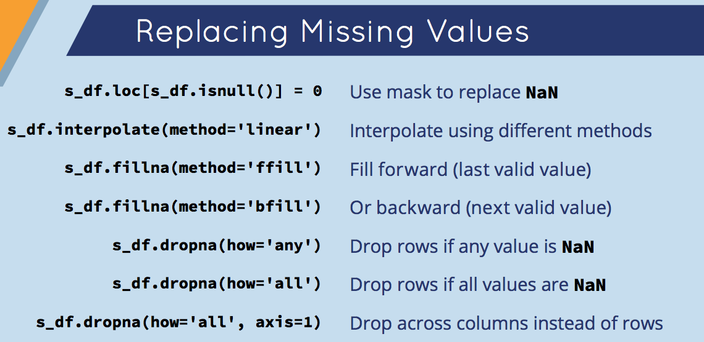
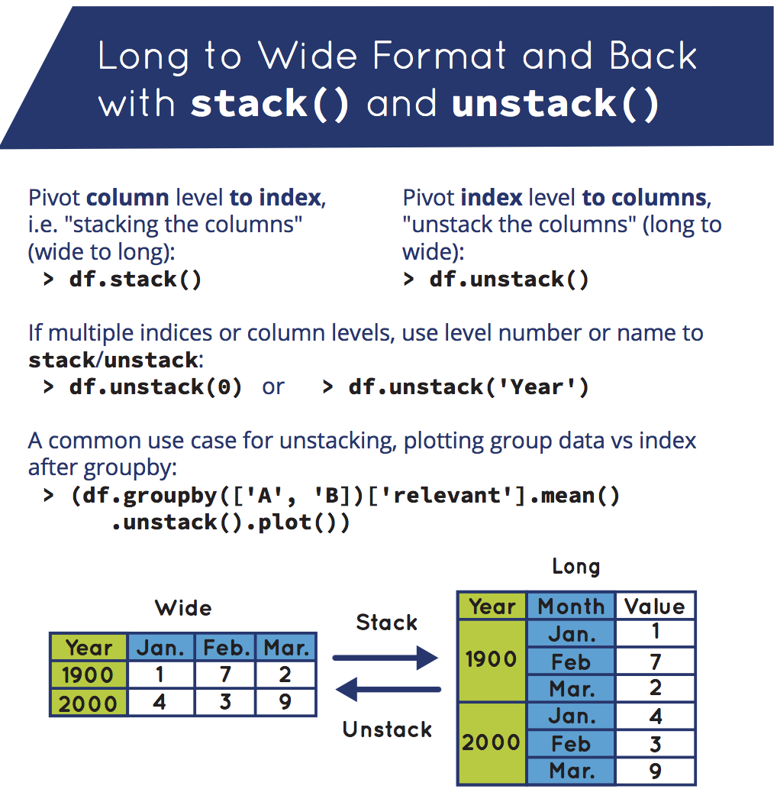
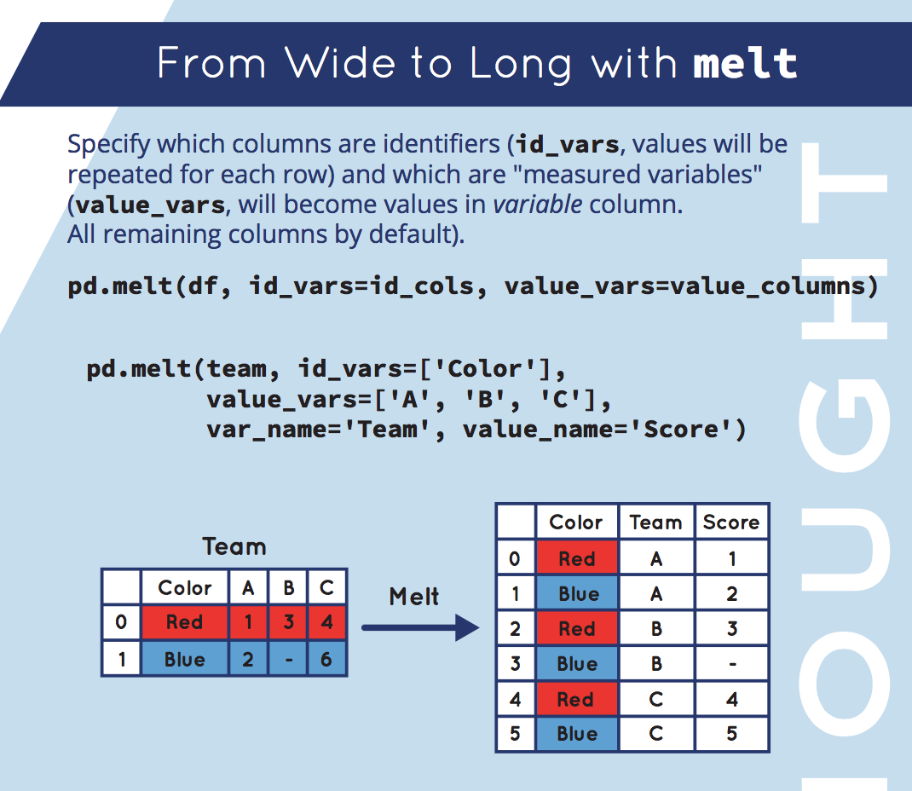
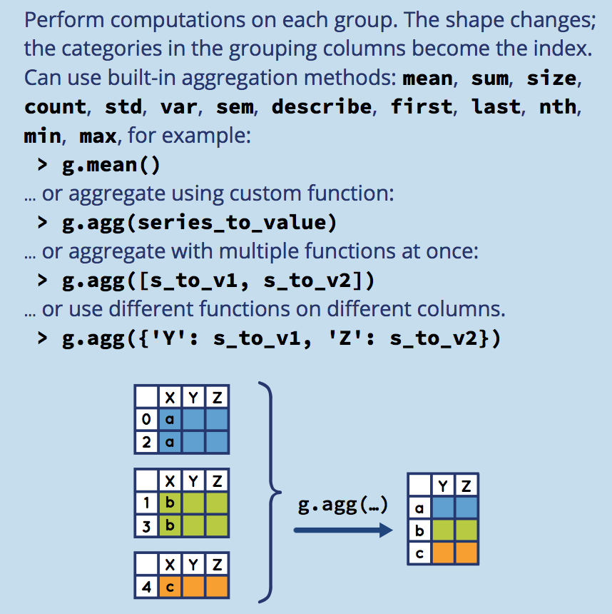
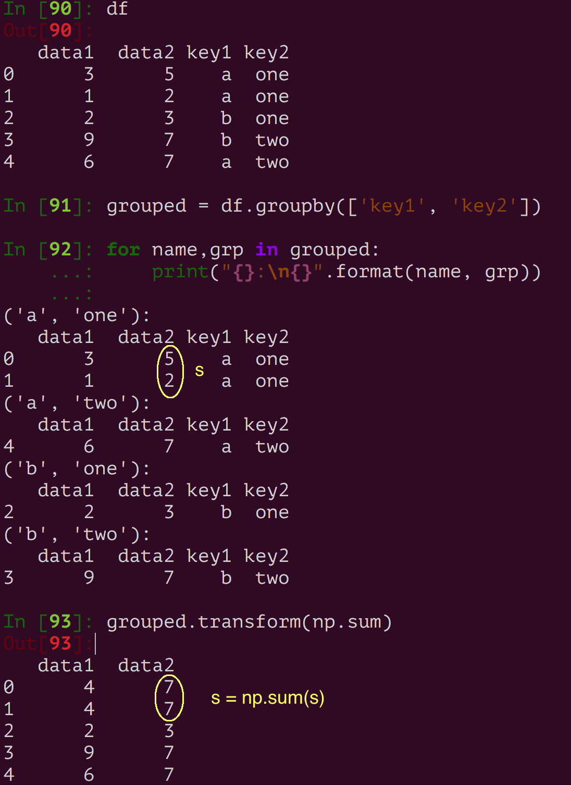
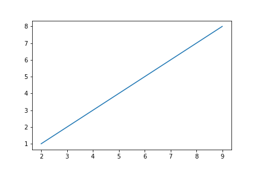
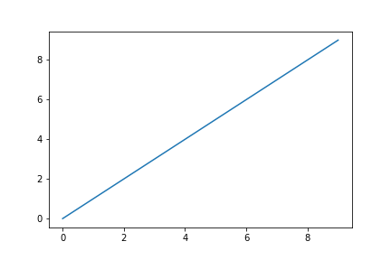

Pandas V2
Table of Contents
- 1. 核心数据结构创建与基本操作
- 2. 索引
- 3. 数据清洗
- 4. 数据规整：连接，联合，重塑
- 5. 聚合与分组操作
- 6. 时间序列
- 7. 移动窗口函数
- 8. 实用方法
Table of Contents
- 1. 核心数据结构创建与基本操作
- 2. 索引
- 3. 数据清洗
- 4. 数据规整：连接，联合，重塑
- 5. 聚合与分组操作
- 6. 时间序列
- 7. 移动窗口函数
- 8. 实用方法
| Author | Hao Ruan (haoru@cisco.com) |
| Date | 2018-10-05 14:16:32 |
1 核心数据结构创建与基本操作
1.1 索引对象
Pandas 中的索引对象适用于存储标签和其他元数据的。
索引对象是不可变的。
s = pd.Series(range(3), index=list('abc')) index = s.index log("index", index) log("index[1:]", index[1:]) try: index[1] = 'd' # TypeError except Exception as e: log("TypeError", e)
==================================== index ===================================== Index(['a', 'b', 'c'], dtype='object') ================================== index[1:] =================================== Index(['b', 'c'], dtype='object') ================================== TypeError =================================== Index does not support mutable operations
1.2 Panel
Panel 是三维带标签的数组。
Panel 由三个标签组成：
- items
- 坐标轴 0 ，索引对应的元素是一个 DataFrame
- major_axis
- 坐标轴 1 , DataFrame 里的行标签
- minor_axis
- 坐标轴 2 , DataFrame 里的列标签
1.3 Series
Series 是一维带标签的数组，数组里可以放任意的数据（整数，浮点数，字符串，Python Object）。
其基本的创建函数是： pd.Series(data, index=index)
其中 index 是一个列表，用来作为数据的标签。data 可以是不同的数据类型：
- Python 字典
- ndarray 对象
- 一个标量值，如 5
1.3.1 创建
1.3.1.1 从 ndarray 创建
s = pd.Series(np.random.randn(5), index=['a', 'b', 'c', 'd', 'e']) log("s", s) log("s.index", s.index) s2 = pd.Series(np.random.randn(5)) log("s2", s2) log("s2.index", s2.index)
====================================== s ======================================= a 1.048359 b -0.206651 c 0.875843 d 0.417848 e 1.849956 dtype: float64 =================================== s.index ==================================== Index(['a', 'b', 'c', 'd', 'e'], dtype='object') ====================================== s2 ====================================== 0 -0.298220 1 -0.550852 2 -0.558227 3 -1.762704 4 -1.475406 dtype: float64 =================================== s2.index =================================== RangeIndex(start=0, stop=5, step=1)
1.3.1.2 从字典创建
d = {'a' : 0., 'b' : 1., 'd' : 3} s = pd.Series(d, index=list('abcd')) log("s", s)
====================================== s ======================================= a 0.0 b 1.0 c NaN d 3.0 dtype: float64
1.3.1.3 从标量创建
s = pd.Series(3, index=list('abcde')) log("s", s)
====================================== s ======================================= a 3 b 3 c 3 d 3 e 3 dtype: int64
1.3.2 基本操作
1.3.2.1 赋值
s = pd.Series([4, 7, -5, 3], index=['d', 'b', 'a', 'c']) log("s", s) s['b':'a'] = 5 log("s", s)
====================================== s ======================================= d 4 b 7 a -5 c 3 dtype: int64 ====================================== s ======================================= d 4 b 5 a 5 c 3 dtype: int64
1.3.2.2 与标量相乘
s = pd.Series([4, 7, -5, 3], index=['d', 'b', 'a', 'c']) log("s * 2", s * 2)
==================================== s * 2 ===================================== d 8 b 14 a -10 c 6 dtype: int64
1.3.2.3 应用数学函数
s = pd.Series([4, 7, -5, 3], index=['d', 'b', 'a', 'c']) log("np.exp(s)", np.exp(s))
================================== np.exp(s) =================================== d 54.598150 b 1096.633158 a 0.006738 c 20.085537 dtype: float64
1.3.2.4 映射 (apply)
s.apply(value_to_value_func) -> Series
1.3.2.5 排序(sort_index/sort_values)
s = pd.Series(range(4), index=list('dabc')) log("s.sort_index()", s.sort_index()) log("s.sort_values()", s.sort_values())
================================ s.sort_index() ================================ a 1 b 2 c 3 d 0 dtype: int64 =============================== s.sort_values() ================================ d 0 a 1 b 2 c 3 dtype: int64
1.3.2.6 唯一值，计数和成员(unique/count/isin)
s = pd.Series(list('cadaabbcc')) log("s.unique()", s.unique()) log("s.value_counts()", s.value_counts()) log("s.isin(['b', 'c'])", s.isin(['b', 'c']))
1.3.2.7 排名(rank)
s = pd.Series([7, -5, 7, 4, 2, 0, 4]) log("s.rank()", s.rank()) log("s.rank(method='first')", s.rank(method='first')) log("s.rank(ascending=False, method='max')", s.rank(ascending=False, method='max'))
=================================== s.rank() =================================== 0 6.5 1 1.0 2 6.5 3 4.5 4 3.0 5 2.0 6 4.5 dtype: float64 ============================ s.rank(method='first') ============================ 0 6.0 1 1.0 2 7.0 3 4.0 4 3.0 5 2.0 6 5.0 dtype: float64 ==================== s.rank(ascending=False, method='max') ===================== 0 2.0 1 7.0 2 2.0 3 4.0 4 5.0 5 6.0 6 4.0 dtype: float64
1.3.2.8 在字典上下文中使用
s = pd.Series([4, 7, -5, 3], index=['d', 'b', 'a', 'c']) log("'b' in s", 'b' in s) log("'e' in s", 'e' in s) log("7 in s", 7 in s)
: =================================== 'b' in s =================================== : True : =================================== 'e' in s =================================== : False : ==================================== 7 in s ==================================== : False
1.3.2.9 检查缺失数据
data = {'Ohio': 35000, 'Texas': 71000, 'Oregon': 16000, 'Utah': 5000} states = ['California', 'Ohio', 'Oregon', 'Texas'] s = pd.Series(data, index=states) log("s", s) log("s.isnull()", s.isnull()) log("s.notnull()", s.notnull())
====================================== s ======================================= California NaN Ohio 35000.0 Oregon 16000.0 Texas 71000.0 dtype: float64 ================================== s.isnull() ================================== California True Ohio False Oregon False Texas False dtype: bool ================================= s.notnull() ================================== California False Ohio True Oregon True Texas True dtype: bool
1.4 DataFrame
DataFrame 是 二维带行索引和列索引的矩阵 。
可以把 DataFrame 想象成一个包含 已排序的列 的集合。
创建 DataFrame 的基本格式是：
pd.DataFrame(data, index=index, columns=columns)
其中 index 是行标签，=columns= 是列标签，=data= 可以是下面的数据：
- 由一维 numpy 数组，list，Series 构成的字典
- 二维 numpy 数组
- 一个 Series
- 另外的 DataFrame 对象
1.4.1 创建
1.4.1.1 从字典创建
key 为 DataFrame 的列； value 为对应列下的值
d = {'one' : pd.Series([1, 2, 3], index=['a', 'b', 'c']), 'two' : pd.Series([1, 2, 3, 4], index=['a', 'b', 'c', 'd'])} log("pd.DataFrame(d)", pd.DataFrame(d)) log("pd.DataFrame(d, index=['d', 'b', 'a'])", pd.DataFrame(d, index=['d', 'b', 'a'])) log("pd.DataFrame(d, index=['d', 'b', 'a'], columns=['two', 'three'])", pd.DataFrame(d, index=['d', 'b', 'a'], columns=['two', 'three']))
=============================== pd.DataFrame(d) ================================ one two a 1.0 1 b 2.0 2 c 3.0 3 d NaN 4 ==================== pd.DataFrame(d, index=['d', 'b', 'a']) ==================== one two d NaN 4 b 2.0 2 a 1.0 1 ======= pd.DataFrame(d, index=['d', 'b', 'a'], columns=['two', 'three']) ======= two three d 4 NaN b 2 NaN a 1 NaN
d = {'one' : [1, 2, 3, 4], 'two' : [21, 22, 23, 24]} log("pd.DataFrame(d)", pd.DataFrame(d)) log("pd.DataFrame(d, index=['a', 'b', 'c', 'd'])", pd.DataFrame(d, index=['a', 'b', 'c', 'd']))
=============================== pd.DataFrame(d) ================================ one two 0 1 21 1 2 22 2 3 23 3 4 24 ================= pd.DataFrame(d, index=['a', 'b', 'c', 'd']) ================== one two a 1 21 b 2 22 c 3 23 d 4 24
df = pd.DataFrame({ 'A': 1, 'B': pd.Timestamp('20160301'), 'C': range(4), 'D': np.arange(5, 9), 'E': 'text', 'F': ['AA', 'BB', 'CC', 'DD']}) log("df", df)
====================================== df ====================================== A B C D E F 0 1 2016-03-01 0 5 text AA 1 1 2016-03-01 1 6 text BB 2 1 2016-03-01 2 7 text CC 3 1 2016-03-01 3 8 text DD
1.4.1.2 从结构化数据列表创建
data = [(1, 2.2, 'Hello'), (2, 3., "World")] log("pd.DataFrame(data)", pd.DataFrame(data)) log("pd.DataFrame(data, index=['first', 'second'], columns=['A', 'B', 'C'])", pd.DataFrame(data, index=['first', 'second'], columns=['A', 'B', 'C']))
============================== pd.DataFrame(data) ==============================
0 1 2
0 1 2.2 Hello
1 2 3.0 World
==== pd.DataFrame(data, index=['first', 'second'], columns=['A', 'B', 'C']) ====
A B C
first 1 2.2 Hello
second 2 3.0 World
1.4.1.3 从字典列表创建
data = [{'a': 1, 'b': 2}, {'a': 5, 'b': 10, 'c': 20}] log("pd.DataFrame(data)", pd.DataFrame(data)) log("pd.DataFrame(data, index=['first', 'second'])", pd.DataFrame(data, index=['first', 'second'])) log("pd.DataFrame(data, columns=['a', 'b'])", pd.DataFrame(data, columns=['a', 'b']))
============================== pd.DataFrame(data) ==============================
a b c
0 1 2 NaN
1 5 10 20.0
================ pd.DataFrame(data, index=['first', 'second']) =================
a b c
first 1 2 NaN
second 5 10 20.0
==================== pd.DataFrame(data, columns=['a', 'b']) ====================
a b
0 1 2
1 5 10
1.4.1.4 从元组字典创建
实际应用中，会通过数据清洗的方式，把数据整理成方便 Pandas 导入且可读性好的格式。 然后再通过 reindex/groupby 等方式转换成复杂数据结构。
d = {('a', 'b'): {('A', 'B'): 1, ('A', 'C'): 2}, ('a', 'a'): {('A', 'C'): 3, ('A', 'B'): 4}, ('a', 'c'): {('A', 'B'): 5, ('A', 'C'): 6}, ('b', 'a'): {('A', 'C'): 7, ('A', 'B'): 8}, ('b', 'b'): {('A', 'D'): 9, ('A', 'B'): 10}} # 多级标签 log("pd.DataFrame(d)", pd.DataFrame(d))
=============================== pd.DataFrame(d) ================================
a b
b a c a b
A B 1.0 4.0 5.0 8.0 10.0
C 2.0 3.0 6.0 7.0 NaN
D NaN NaN NaN NaN 9.0
1.4.1.5 从 Series 创建
s = pd.Series(np.random.randn(5), index=['a', 'b', 'c', 'd', 'e']) log("pd.DataFrame(s)", pd.DataFrame(s)) log("pd.DataFrame(s, index=['a', 'c', 'd'])", pd.DataFrame(s, index=['a', 'c', 'd'])) log("pd.DataFrame(s, index=['a', 'c', 'd'], columns=['A'])", pd.DataFrame(s, index=['a', 'c', 'd'], columns=['A']))
=============================== pd.DataFrame(s) ================================
0
a 1.052429
b -0.183841
c -0.567050
d -0.946448
e -0.245539
==================== pd.DataFrame(s, index=['a', 'c', 'd']) ====================
0
a 1.052429
c -0.567050
d -0.946448
============ pd.DataFrame(s, index=['a', 'c', 'd'], columns=['A']) =============
A
a 1.052429
c -0.567050
d -0.946448
1.4.1.6 指定行列索引创建
dates = pd.date_range('20160301', periods=6) log("dates", dates) df = pd.DataFrame(np.random.randn(6,4), index=dates, columns=list('ABCD')) log("df", df)
==================================== dates =====================================
DatetimeIndex(['2016-03-01', '2016-03-02', '2016-03-03', '2016-03-04',
'2016-03-05', '2016-03-06'],
dtype='datetime64[ns]', freq='D')
====================================== df ======================================
A B C D
2016-03-01 -0.048170 1.536653 0.286190 -0.105748
2016-03-02 0.212721 -0.019064 -0.235831 -0.123454
2016-03-03 -0.465780 0.908629 0.148821 0.736669
2016-03-04 1.020257 1.094551 0.508659 0.018455
2016-03-05 -0.065958 0.437436 -1.026936 0.028647
2016-03-06 -0.055553 0.853023 -0.155418 0.160215
1.4.2 基本操作
1.4.2.1 转置
data = {'Nevada': {2001: 2.4, 2002: 2.9}, 'Ohio': {2001: 1.5, 2001: 1.7, 2002: 3.6}} df = pd.DataFrame(data) log("df", df) log("df.T", df.T)
====================================== df ======================================
Nevada Ohio
2001 2.4 1.7
2002 2.9 3.6
===================================== df.T =====================================
2001 2002
Nevada 2.4 2.9
Ohio 1.7 3.6
1.4.2.2 算数运算填充
df1 = pd.DataFrame(np.arange(12.).reshape((3, 4)), columns=list('abcd')) df2 = pd.DataFrame(np.arange(20.).reshape((4, 5)), columns=list('abcde')) log("df1", df1) log("df2", df2) log("df1 + df2", df1 + df2) log("df1.add(df2, fill_value=0)", df1.add(df2, fill_value=0))
===================================== df1 ======================================
a b c d
0 0.0 1.0 2.0 3.0
1 4.0 5.0 6.0 7.0
2 8.0 9.0 10.0 11.0
===================================== df2 ======================================
a b c d e
0 0.0 1.0 2.0 3.0 4.0
1 5.0 6.0 7.0 8.0 9.0
2 10.0 11.0 12.0 13.0 14.0
3 15.0 16.0 17.0 18.0 19.0
================================== df1 + df2 ===================================
a b c d e
0 0.0 2.0 4.0 6.0 NaN
1 9.0 11.0 13.0 15.0 NaN
2 18.0 20.0 22.0 24.0 NaN
3 NaN NaN NaN NaN NaN
========================== df1.add(df2, fill_value=0) ==========================
a b c d e
0 0.0 2.0 4.0 6.0 4.0
1 9.0 11.0 13.0 15.0 9.0
2 18.0 20.0 22.0 24.0 14.0
3 15.0 16.0 17.0 18.0 19.0
1.4.2.3 和 Series 之间的运算（广播机制）
默认会将 Series 的索引与 DataFrame 的列进行匹配，并广播到各行：
df = pd.DataFrame(np.arange(12.).reshape((4, 3)), columns=list('bde'), index=['Utah', 'Ohio', 'Texas', 'Oregon']) log("df", df) s = df.iloc[0] log("s", s) log("df - s", df - s) s2 = pd.Series(range(3), index=['b', 'e', 'f']) log("df + s2", df + s2)
====================================== df ======================================
b d e
Utah 0.0 1.0 2.0
Ohio 3.0 4.0 5.0
Texas 6.0 7.0 8.0
Oregon 9.0 10.0 11.0
====================================== s =======================================
b 0.0
d 1.0
e 2.0
Name: Utah, dtype: float64
==================================== df - s ====================================
b d e
Utah 0.0 0.0 0.0
Ohio 3.0 3.0 3.0
Texas 6.0 6.0 6.0
Oregon 9.0 9.0 9.0
=================================== df + s2 ====================================
b d e f
Utah 0.0 NaN 3.0 NaN
Ohio 3.0 NaN 6.0 NaN
Texas 6.0 NaN 9.0 NaN
Oregon 9.0 NaN 12.0 NaN
如果想在列上广播，在行上匹配，必须使用 算数方法 中的一种：
s3 = df['d'] log("df.sub(s3, axis='index')", df.sub(s3, axis='index'))
=========================== df.sub(s3, axis='index') ===========================
b d e
Utah -1.0 0.0 1.0
Ohio -1.0 0.0 1.0
Texas -1.0 0.0 1.0
Oregon -1.0 0.0 1.0
1.4.2.4 应用函数
从本质上讲，DataFrame 内部用的数据结构就是 numpy 的 ndarray 。
df = pd.DataFrame(np.random.randn(10, 4), columns=['one', 'two', 'three', 'four']) log("df", df) log("np.exp(df)", np.exp(df)) log("np.sin(df)", np.sin(df))
====================================== df ======================================
one two three four
0 0.384419 -0.261265 -0.776319 -1.083965
1 -0.280943 1.203641 0.392169 -2.484636
2 1.101764 0.041095 1.075932 0.543424
3 0.472131 0.070010 -0.199482 -0.140922
4 -0.479721 0.281841 1.163404 0.694684
5 -0.464032 -1.058426 -0.692909 0.244612
6 1.082909 1.101045 -1.151583 -1.061644
7 0.533688 -1.130648 -0.350829 1.444129
8 -0.019973 1.649555 1.037025 0.059973
9 -0.337814 -2.070719 1.277318 -0.913099
================================== np.exp(df) ==================================
one two three four
0 1.468760 0.770077 0.460097 0.338252
1 0.755072 3.332227 1.480187 0.083356
2 3.009471 1.041951 2.932725 1.721893
3 1.603407 1.072519 0.819155 0.868557
4 0.618956 1.325568 3.200812 2.003075
5 0.628743 0.347002 0.500119 1.277125
6 2.953258 3.007307 0.316136 0.345887
7 1.705209 0.322824 0.704104 4.238160
8 0.980226 5.204665 2.820814 1.061808
9 0.713328 0.126095 3.587005 0.401279
================================== np.sin(df) ==================================
one two three four
0 0.375020 -0.258303 -0.700658 -0.883820
1 -0.277262 0.933352 0.382193 -0.610710
2 0.892006 0.041083 0.880033 0.517070
3 0.454785 0.069953 -0.198162 -0.140456
4 -0.461532 0.278124 0.918157 0.640142
5 -0.447558 -0.871585 -0.638778 0.242180
6 0.883325 0.891681 -0.913410 -0.873158
7 0.508712 -0.904688 -0.343677 0.991988
8 -0.019971 0.996900 0.860895 0.059937
9 -0.331425 -0.877620 0.957243 -0.791402
1.4.2.5 行/列映射 (apply)
df.apply(series_to_series_func) -> DataFrame
df.apply(series_to_value_func) -> Series
df = pd.DataFrame(np.arange(12).reshape(4, 3), index=['one', 'two', 'three', 'four'], columns=list('ABC')) log("df", df) log("df.apply(lambda x: x.max() - x.min())", df.apply(lambda x: x.max() - x.min())) log("df.apply(lambda x: x.max() - x.min(), axis=1)", df.apply(lambda x: x.max() - x.min(), axis=1)) def min_max(x): return pd.Series([x.min(), x.max()], index=['min', 'max']) log("df.apply(min_max, axis=1)", df.apply(min_max, axis=1))
====================================== df ======================================
A B C
one 0 1 2
two 3 4 5
three 6 7 8
four 9 10 11
==================== df.apply(lambda x: x.max() - x.min()) =====================
A 9
B 9
C 9
dtype: int64
================ df.apply(lambda x: x.max() - x.min(), axis=1) =================
one 2
two 2
three 2
four 2
dtype: int64
========================== df.apply(min_max, axis=1) ===========================
min max
one 0 2
two 3 5
three 6 8
four 9 11
1.4.2.6 逐元素映射 (applymap)
df.applymap(value_to_value_func) -> DataFrame
df = pd.DataFrame(np.random.randn(4, 3), index=['one', 'two', 'three', 'four'], columns=list('ABC')) log("df", df) log("df.applymap(lambda x: '{0:.03f}'.format(x))", df.applymap(lambda x: '{0:.03f}'.format(x)))
1.4.2.7 排序(sort_index/sort_values)
df = pd.DataFrame(np.arange(8).reshape((2, 4)), index=['three', 'one'], columns=list('dabc')) log("df", df) log("df.sort_index()", df.sort_index()) log("df.sort_index(axis=1)", df.sort_index(axis=1)) log("df.sort_values(by='a')", df.sort_values(by='a')) log("df.sort_values(by=['a', 'b'])", df.sort_values(by=['a', 'b']))
====================================== df ======================================
d a b c
three 0 1 2 3
one 4 5 6 7
=============================== df.sort_index() ================================
d a b c
one 4 5 6 7
three 0 1 2 3
============================ df.sort_index(axis=1) =============================
a b c d
three 1 2 3 0
one 5 6 7 4
============================ df.sort_values(by='a') ============================
d a b c
three 0 1 2 3
one 4 5 6 7
======================== df.sort_values(by=['a', 'b']) =========================
d a b c
three 0 1 2 3
one 4 5 6 7
1.4.2.8 排名(rank)
df = pd.DataFrame({'b': [4.3, 7, -3, 2], 'a': [0, 1, 0, 1], 'c': [-2, 5, 8, -2.5]}) log("df", df) log("df.rank(axis='columns')", df.rank(axis='columns'))
====================================== df ======================================
b a c
0 4.3 0 -2.0
1 7.0 1 5.0
2 -3.0 0 8.0
3 2.0 1 -2.5
=========================== df.rank(axis='columns') ============================
b a c
0 3.0 2.0 1.0
1 3.0 1.0 2.0
2 1.0 2.0 3.0
3 3.0 2.0 1.0
1.4.2.9 转换为 ndarray 对象
df = pd.DataFrame(np.random.randn(10, 4), columns=['one', 'two', 'three', 'four']) ary = np.asarray(df) log("ary", ary) log("ary == df.values", ary == df.values) log("ary == df", ary == df)
===================================== ary ======================================
[[ 2.04624678 -0.6312282 0.67979273 -0.44172316]
[-0.86094589 1.94346553 -2.14098712 -0.59540524]
[-0.15020567 0.89921316 1.57976154 1.28561354]
[ 0.36556931 0.74106876 -1.11107492 -0.0127461 ]
[ 1.0701633 -1.33064105 0.21082171 2.11969444]
[-1.40825621 0.77820317 0.28563787 -0.00318099]
[-0.41136998 0.73250492 1.42237664 -1.03227235]
[-0.05801189 0.2636244 -1.40155875 -1.28585849]
[-1.00331627 0.53425829 -0.37204681 0.34346003]
[-0.39496311 -1.61744328 -0.95510468 -0.5185989 ]]
=============================== ary == df.values ===============================
[[ True True True True]
[ True True True True]
[ True True True True]
[ True True True True]
[ True True True True]
[ True True True True]
[ True True True True]
[ True True True True]
[ True True True True]
[ True True True True]]
================================== ary == df ===================================
one two three four
0 True True True True
1 True True True True
2 True True True True
3 True True True True
4 True True True True
5 True True True True
6 True True True True
7 True True True True
8 True True True True
9 True True True True
1.4.2.10 统计
- count 非 NA 值个数
- describe 计算 Series 或 DataFrame 各列的汇总统计集合
- min, max
- argmin, argmax 最大最小值所在索引位置（整数）
- idxmin, idxmax 最大最小值所在索引标签
- quantile 计算样本从 0 到 1 间的分位数
- sum
- mean
- median
- mad 平均值的平均绝对偏差
- mod 频繁统计
- prod 所有值的积
- var 样本方差
- std 标准差
- skew 样本偏度（第三时刻）值
- kurt 样本峰度（第四时刻）值
- cumsum 累计值
- cummin, cummax
- cumprod
- diff 计算第一个算术差值（对时间序列有用）
- pct_change 计算百分比
2 索引
2.1 Series
2.1.1 设置对象自身和索引的 name 属性
data = {'Ohio': 35000, 'Texas': 71000, 'Oregon': 16000, 'Utah': 5000} states = ['California', 'Ohio', 'Oregon', 'Texas'] s = pd.Series(data, index=states) s.name = 'population' s.index.name = 'state' log("s", s)
====================================== s ======================================= state California NaN Ohio 35000.0 Oregon 16000.0 Texas 71000.0 Name: population, dtype: float64
2.1.2 获取值和索引
s = pd.Series(np.random.randn(5), index=['a', 'b', 'c', 'd', 'e']) log("s", s) log("s.values", s.values) log("s.index", s.index)
====================================== s ======================================= a 0.007460 b -0.346364 c -1.524387 d -0.389066 e 0.464790 dtype: float64 =================================== s.values =================================== [ 0.00745967 -0.34636371 -1.52438655 -0.38906608 0.46479046] =================================== s.index ==================================== Index(['a', 'b', 'c', 'd', 'e'], dtype='object')
2.1.3 索引对齐
相同索引值才进行操作
s1 = pd.Series(np.random.randint(3, size=3), index=['a', 'c', 'e']) s2 = pd.Series(np.random.randint(3, size=3), index=['a', 'd', 'e']) log("s1", s1) log("s2", s2) log("s1 + s2", s1 + s2)
====================================== s1 ====================================== a 1 c 0 e 1 dtype: int64 ====================================== s2 ====================================== a 1 d 1 e 0 dtype: int64 =================================== s1 + s2 ==================================== a 2.0 c NaN d NaN e 1.0 dtype: float64
2.1.4 重建索引
s = pd.Series([4.5, 7.2, -5.3, 3.6], index=['d', 'b', 'a', 'c']) log("s", s) log("s.reindex(['a', 'b', 'c', 'd', 'e'])", s.reindex(['a', 'b', 'c', 'd', 'e']))
====================================== s ======================================= d 4.5 b 7.2 a -5.3 c 3.6 dtype: float64 ===================== s.reindex(['a', 'b', 'c', 'd', 'e']) ===================== a -5.3 b 7.2 c 3.6 d 4.5 e NaN dtype: float64
重建索引时插值:
s = pd.Series(['blue', 'purple', 'yellow'], index=[0, 2, 4]) log("s", s) log("s.reindex(range(6), method='ffill')", s.reindex(range(6), method='ffill'))
====================================== s ======================================= 0 blue 2 purple 4 yellow dtype: object ===================== s.reindex(range(6), method='ffill') ====================== 0 blue 1 blue 2 purple 3 purple 4 yellow 5 yellow dtype: object
2.1.5 删除索引
s = pd.Series(np.arange(5.), index=list('abcde')) log("s", s) log("s.drop('c')", s.drop('c')) log("s.drop(['d', 'c'])", s.drop(['d', 'c']))
====================================== s =======================================
a 0.0
b 1.0
c 2.0
d 3.0
e 4.0
dtype: float64
================================= s.drop('c') ==================================
a 0.0
b 1.0
d 3.0
e 4.0
dtype: float64
============================== s.drop(['d', 'c']) ==============================
a 0.0
b 1.0
e 4.0
dtype: float64
2.1.6 标签索引
s = pd.Series([4, 7, -5, 3], index=['a', 'b', 'c', 'd']) log("s", s) log("s['a']", s['a']) s['d'] = 6 log("s[['c', 'a', 'd']]", s[['c', 'a', 'd']]) log("s['b' : 'c']", s['b' : 'c'])
====================================== s ======================================= a 4 b 7 c -5 d 3 dtype: int64 ==================================== s['a'] ==================================== 4 ============================== s[['c', 'a', 'd']] ============================== c -5 a 4 d 6 dtype: int64 ================================= s['b' : 'c'] ================================= b 7 c -5 dtype: int64
2.1.7 布尔索引
s = pd.Series([4, 7, -5, 3], index=['d', 'b', 'a', 'c']) log("s[s > 0]", s[s > 0])
=================================== s[s > 0] =================================== d 4 b 7 c 3 dtype: int64
2.2 DataFrame
2.2.1 设置行/列索引的 name 属性
data = {'Nevada': {2001: 2.4, 2002: 2.9}, 'Ohio': {2001: 1.5, 2001: 1.7, 2002: 3.6}} df = pd.DataFrame(data) df.index.name = 'year' df.columns.name = 'state' log("df", df)
====================================== df ====================================== state Nevada Ohio year 2001 2.4 1.7 2002 2.9 3.6
2.2.2 重建索引
在 DataFrame 中， reindex 可以改变行索引，列索引，也可以同时改变两者。
fill method 只对行重新索引有效，不适用列。
df = pd.DataFrame(np.arange(9).reshape((3,3)), index=list('acd'), columns=['Ohio', 'Texas', 'California']) log("df", df) # 重建行索引 log("df.reindex(['a', 'b', 'c', 'd'])", df.reindex(['a', 'b', 'c', 'd'])) # 重建列索引 states = ['Texas', 'Utah', 'California'] log("df.reindex(columns=states)", df.reindex(columns=states))
====================================== df ====================================== Ohio Texas California a 0 1 2 c 3 4 5 d 6 7 8 ======================= df.reindex(['a', 'b', 'c', 'd']) ======================= Ohio Texas California a 0.0 1.0 2.0 b NaN NaN NaN c 3.0 4.0 5.0 d 6.0 7.0 8.0 ========================== df.reindex(columns=states) ========================== Texas Utah California a 1 NaN 2 c 4 NaN 5 d 7 NaN 8
2.2.3 索引对齐
DataFrame 在进行数据计算时， 会自动按行和列进行数据对齐 。 最终的计算结果会合并两个 DataFrame 。
df1 = pd.DataFrame(np.arange(9.).reshape((3, 3)), columns=list('bcd'), index=['Ohio', 'Texas', 'Colorado']) df2 = pd.DataFrame(np.arange(12.).reshape((4, 3)), columns=list('bde'), index=['Utah', 'Ohio', 'Texas', 'Oregon']) log("df1", df1) log("df2", df2) log("df1 + df2", df1 + df2)
2.2.4 列赋值
当将列表或数组赋值给一个列时，长度必须和 DataFrame 的长度相匹配。
data = {'state': ['Ohio', 'Ohio', 'Ohio', 'Nevada', 'Nevada', 'Nevada'], 'year': [2000, 2001, 2002, 2001, 2002, 2003], 'pop': [1.5, 1.7, 3.6, 2.4, 2.9, 3.2]} columns = ['year', 'state', 'pop'] index = ['one', 'two', 'three', 'four', 'five', 'six'] df = pd.DataFrame(data, columns=columns, index=index) df['debt'] = 16.5 # 标量赋值 df['income'] = np.arange(6.) # 数组赋值 log("df", df)
====================================== df ======================================
year state pop debt income
one 2000 Ohio 1.5 16.5 0.0
two 2001 Ohio 1.7 16.5 1.0
three 2002 Ohio 3.6 16.5 2.0
four 2001 Nevada 2.4 16.5 3.0
five 2002 Nevada 2.9 16.5 4.0
six 2003 Nevada 3.2 16.5 5.0
将 Series 赋值给一列时，Series 的索引会按照 DataFrame 的索引重新排列。
val = pd.Series([-1.2, -1.5, -1.7], index=['two', 'four', 'five']) df['debt'] = val log("df", df)
====================================== df ======================================
year state pop debt income
one 2000 Ohio 1.5 NaN 0.0
two 2001 Ohio 1.7 -1.2 1.0
three 2002 Ohio 3.6 NaN 2.0
four 2001 Nevada 2.4 -1.5 3.0
five 2002 Nevada 2.9 -1.7 4.0
six 2003 Nevada 3.2 NaN 5.0
2.2.5 删除行/列
data = {'state': ['Ohio', 'Ohio', 'Ohio', 'Nevada', 'Nevada', 'Nevada'], 'year': [2000, 2001, 2002, 2001, 2002, 2003], 'pop': [1.5, 1.7, 3.6, 2.4, 2.9, 3.2]} columns = ['year', 'state', 'pop'] index = ['one', 'two', 'three', 'four', 'five', 'six'] df = pd.DataFrame(data, columns=columns, index=index) del df['pop'] yearSeries = df.pop('year') df.drop('state', axis='columns', inplace=True) log("df", df)
====================================== df ====================================== Empty DataFrame Columns: [] Index: [one, two, three, four, five, six]
df = pd.DataFrame(np.arange(16).reshape((4, 4)), index=["Ohio", "Colorado", "Utah", "New York"], columns=["one", "two", "three", "four"]) log("df", df) log("df.drop('Colorado')", df.drop('Colorado')) # 删除行 log("df.drop('two', axis='columns')", df.drop('two', axis='columns'))
====================================== df ======================================
one two three four
Ohio 0 1 2 3
Colorado 4 5 6 7
Utah 8 9 10 11
New York 12 13 14 15
============================= df.drop('Colorado') ==============================
one two three four
Ohio 0 1 2 3
Utah 8 9 10 11
New York 12 13 14 15
======================== df.drop('two', axis='columns') ========================
one three four
Ohio 0 2 3
Colorado 4 6 7
Utah 8 10 11
New York 12 14 15
2.2.6 标签索引
从 DataFrame 中玄虚的列是数据的 视图 ，而不是拷贝。
如果需要复制，应当显式地使用 Series 的 copy 方法。
返回的 Series 与原 DataFrame 有相同的索引，且 Series 的 name 属性也会被合理地设置。
data = {'state': ['Ohio', 'Ohio', 'Ohio', 'Nevada', 'Nevada', 'Nevada'], 'year': [2000, 2001, 2002, 2001, 2002, 2003], 'pop': [1.5, 1.7, 3.6, 2.4, 2.9, 3.2]} columns = ['year', 'state', 'pop'] df = pd.DataFrame(data, columns=columns) log("df", df) log("df['state']", df['state']) log("df.year", df.year) log("df[['state', 'pop']]", df[['state', 'pop']])
====================================== df ======================================
year state pop
0 2000 Ohio 1.5
1 2001 Ohio 1.7
2 2002 Ohio 3.6
3 2001 Nevada 2.4
4 2002 Nevada 2.9
5 2003 Nevada 3.2
================================= df['state'] ==================================
0 Ohio
1 Ohio
2 Ohio
3 Nevada
4 Nevada
5 Nevada
Name: state, dtype: object
=================================== df.year ====================================
0 2000
1 2001
2 2002
3 2001
4 2002
5 2003
Name: year, dtype: int64
============================= df[['state', 'pop']] =============================
state pop
0 Ohio 1.5
1 Ohio 1.7
2 Ohio 3.6
3 Nevada 2.4
4 Nevada 2.9
5 Nevada 3.2
2.2.7 正则索引
df = pd.DataFrame(np.random.randn(6, 4), index=list('ABCDEF'), columns=['one', 'two', 'three', 'four']) log("df", df) log("df.filter(regex=r'^t.*$')", df.filter(regex=r'^t.*$'))
====================================== df ======================================
one two three four
A 0.266558 0.390929 0.381822 -0.662022
B 0.947612 1.492351 1.824414 -0.682042
C 0.920167 -0.387809 -1.606654 -0.692762
D -0.491672 0.135303 1.653127 0.036277
E -0.922068 0.128126 -1.823203 0.054199
F -0.023060 -0.725380 0.062327 -0.608580
========================== df.filter(regex=r'^t.*$') ===========================
two three
A 0.390929 0.381822
B 1.492351 1.824414
C -0.387809 -1.606654
D 0.135303 1.653127
E 0.128126 -1.823203
F -0.725380 0.062327
2.2.8 整数索引
df = pd.DataFrame(np.arange(16).reshape((4, 4)), index=["Ohio", "Colorado", "Utah", "New York"], columns=["one", "two", "three", "four"]) log("df", df) log("df[:2]", df[:2])
====================================== df ======================================
one two three four
Ohio 0 1 2 3
Colorado 4 5 6 7
Utah 8 9 10 11
New York 12 13 14 15
==================================== df[:2] ====================================
one two three four
Ohio 0 1 2 3
Colorado 4 5 6 7
2.2.9 布尔索引
df = pd.DataFrame(np.arange(16).reshape((4, 4)), index=["Ohio", "Colorado", "Utah", "New York"], columns=["one", "two", "three", "four"]) log("df", df) log("df[df['three'] > 5]", df[df['three'] > 5])
====================================== df ======================================
one two three four
Ohio 0 1 2 3
Colorado 4 5 6 7
Utah 8 9 10 11
New York 12 13 14 15
============================= df[df['three'] > 5] ==============================
one two three four
Colorado 4 5 6 7
Utah 8 9 10 11
New York 12 13 14 15
2.2.10 loc 索引
df = pd.DataFrame(np.arange(16).reshape((4, 4)), index=["Ohio", "Colorado", "Utah", "New York"], columns=["one", "two", "three", "four"]) log("df", df) log("df.loc['Colorado', ['two', 'three']]", df.loc['Colorado', ['two', 'three']]) log("df.loc[:'Utah', 'two']", df.loc[:'Utah', 'two'])
====================================== df ======================================
one two three four
Ohio 0 1 2 3
Colorado 4 5 6 7
Utah 8 9 10 11
New York 12 13 14 15
===================== df.loc['Colorado', ['two', 'three']] =====================
two 5
three 6
Name: Colorado, dtype: int64
============================ df.loc[:'Utah', 'two'] ============================
Ohio 1
Colorado 5
Utah 9
Name: two, dtype: int64
2.2.11 iloc 索引
df = pd.DataFrame(np.arange(16).reshape((4, 4)), index=["Ohio", "Colorado", "Utah", "New York"], columns=["one", "two", "three", "four"]) log("df", df) log("df.iloc[2, [3, 0, 1]]", df.iloc[2, [3, 0, 1]]) log("df.iloc[[1, 2], [3, 0, 1]]", df.iloc[[1, 2], [3, 0, 1]]) log("df.iloc[:, :3][df.three > 5]", df.iloc[:, :3][df.three > 5])
====================================== df ======================================
one two three four
Ohio 0 1 2 3
Colorado 4 5 6 7
Utah 8 9 10 11
New York 12 13 14 15
============================ df.iloc[2, [3, 0, 1]] =============================
four 11
one 8
two 9
Name: Utah, dtype: int64
========================== df.iloc[[1, 2], [3, 0, 1]] ==========================
four one two
Colorado 7 4 5
Utah 11 8 9
========================= df.iloc[:, :3][df.three > 5] =========================
one two three
Colorado 4 5 6
Utah 8 9 10
New York 12 13 14
2.2.12 at 索引
df = pd.DataFrame(np.random.randn(6, 4), index=list('ABCDEF'), columns=['one', 'two', 'three', 'four']) log("df", df) log("df.at['A', 'one']", df.at['A', 'one'])
2.2.13 随机索引
df = pd.DataFrame(np.arange(16).reshape((4, 4)), index=["Ohio", "Colorado", "Utah", "New York"], columns=["one", "two", "three", "four"]) log("df", df) log("df.sample(frac=0.5)", df.sample(frac=0.5)) # Randomly log("df.sample(n=3)", df.sample(n=3)) # Randomly
====================================== df ======================================
one two three four
Ohio 0 1 2 3
Colorado 4 5 6 7
Utah 8 9 10 11
New York 12 13 14 15
============================= df.sample(frac=0.5) ==============================
one two three four
Ohio 0 1 2 3
New York 12 13 14 15
================================ df.sample(n=3) ================================
one two three four
Colorado 4 5 6 7
Ohio 0 1 2 3
Utah 8 9 10 11
2.2.14 重命名行/列
df = pd.DataFrame(np.random.randn(6, 4), index=list('ABCDEF'), columns=['one', 'two', 'three', 'four']) log("origin df", df) df.rename(columns={'three': 'san'}, inplace=True) log("df (column index renamed)", df) df.rename(index={'C': 'ccc'}, inplace=True) log("df (index renamed)", df)
================================== origin df ===================================
one two three four
A -1.293186 -1.303202 -0.434815 1.157079
B 0.559491 1.651170 1.130642 0.372430
C 0.087382 0.948737 0.103419 -0.364204
D 0.363415 0.463077 -1.130338 -1.252423
E -0.570689 -1.141226 0.144087 -0.297187
F 1.028409 1.627355 -1.264463 -0.109870
========================== df (column index renamed) ===========================
one two san four
A -1.293186 -1.303202 -0.434815 1.157079
B 0.559491 1.651170 1.130642 0.372430
C 0.087382 0.948737 0.103419 -0.364204
D 0.363415 0.463077 -1.130338 -1.252423
E -0.570689 -1.141226 0.144087 -0.297187
F 1.028409 1.627355 -1.264463 -0.109870
============================== df (index renamed) ==============================
one two san four
A -1.293186 -1.303202 -0.434815 1.157079
B 0.559491 1.651170 1.130642 0.372430
ccc 0.087382 0.948737 0.103419 -0.364204
D 0.363415 0.463077 -1.130338 -1.252423
E -0.570689 -1.141226 0.144087 -0.297187
F 1.028409 1.627355 -1.264463 -0.109870
3 数据清洗
3.1 处理缺失值
pandas 对象的所有统计信息默认情况下是 排除 缺失值的。
Python 内建的 None 值也被当做 NA 处理。

3.1.1 过滤缺失值(dropna)
s = pd.Series([1, np.nan, 3.5, np.nan, 7]) log("s.dropna()", s.dropna()) # 等价于 s[s.notnull()]
================================== s.dropna() ================================== 0 1.0 2 3.5 4 7.0 dtype: float64
当处理 DataFrame 对象时， dropna 默认情况下删除包含缺失值的行 ：
（使用 axis = 1 删除列）
df = pd.DataFrame([ [1, 6.5, 3], [1, np.nan, np.nan], [np.nan, np.nan, np.nan], [np.nan, 6.5, 3] ]) log("df", df) log("df.dropna()", df.dropna())
====================================== df ======================================
0 1 2
0 1.0 6.5 3.0
1 1.0 NaN NaN
2 NaN NaN NaN
3 NaN 6.5 3.0
================================= df.dropna() ==================================
0 1 2
0 1.0 6.5 3.0
当传入 how = 'all' 时， 删除所有值均为 NA 的那些行 ：
log("df.dropna(how='all')", df.dropna(how='all'))
使用 thresh 参数来保留 包含一定数量观察值 的行：
df = pd.DataFrame(np.random.randn(7, 3)) df.iloc[:4, 1] = np.nan df.iloc[:2, 2] = np.nan log("df", df) log("df.dropna()", df.dropna()) log("df.dropna(thresh=2)", df.dropna(thresh=2))
====================================== df ======================================
0 1 2
0 -0.215937 NaN NaN
1 -1.358234 NaN NaN
2 0.331335 NaN -0.901148
3 -0.466495 NaN 2.392151
4 -0.178190 0.446226 0.710607
5 -0.446093 -0.317979 -0.601814
6 0.550952 1.036072 -1.812287
================================= df.dropna() ==================================
0 1 2
4 -0.178190 0.446226 0.710607
5 -0.446093 -0.317979 -0.601814
6 0.550952 1.036072 -1.812287
============================= df.dropna(thresh=2) ==============================
0 1 2
2 0.331335 NaN -0.901148
3 -0.466495 NaN 2.392151
4 -0.178190 0.446226 0.710607
5 -0.446093 -0.317979 -0.601814
6 0.550952 1.036072 -1.812287
3.1.2 补全缺失值(fillna)
df = pd.DataFrame(np.random.randn(7, 3)) df.iloc[:4, 1] = np.nan df.iloc[:2, 2] = np.nan log("df", df) log("df.fillna(0)", df.fillna(0))
====================================== df ======================================
0 1 2
0 0.997841 NaN NaN
1 -0.554321 NaN NaN
2 -0.804640 NaN 0.838684
3 0.666262 NaN -1.009344
4 0.049296 -0.091335 -0.724490
5 0.172516 -0.255515 0.760672
6 3.210886 1.221200 0.913991
================================= df.fillna(0) =================================
0 1 2
0 0.997841 0.000000 0.000000
1 -0.554321 0.000000 0.000000
2 -0.804640 0.000000 0.838684
3 0.666262 0.000000 -1.009344
4 0.049296 -0.091335 -0.724490
5 0.172516 -0.255515 0.760672
6 3.210886 1.221200 0.913991
调用 fillna 时使用字典，可以 为不同列设定不同的填充值 ：
log("df.fillna({1: 0.5, 2: 0})", df.fillna({1: 0.5, 2: 0}))
========================== df.fillna({1: 0.5, 2: 0}) ===========================
0 1 2
0 0.997841 0.500000 0.000000
1 -0.554321 0.500000 0.000000
2 -0.804640 0.500000 0.838684
3 0.666262 0.500000 -1.009344
4 0.049296 -0.091335 -0.724490
5 0.172516 -0.255515 0.760672
6 3.210886 1.221200 0.913991
使用 插值方法 ：
df = pd.DataFrame(np.random.randn(6, 3)) df.iloc[2:, 1] = np.nan df.iloc[4:, 2] = np.nan log("df", df) log("df.fillna(method='ffill')", df.fillna(method='ffill')) log("df.fillna(method='ffill', limit=2)", df.fillna(method='ffill', limit=2))
====================================== df ======================================
0 1 2
0 0.663103 0.176675 -1.293323
1 -0.108963 0.912126 0.806356
2 0.215125 NaN -1.686062
3 -0.411193 NaN -0.738710
4 -0.038864 NaN NaN
5 -0.561398 NaN NaN
========================== df.fillna(method='ffill') ===========================
0 1 2
0 0.663103 0.176675 -1.293323
1 -0.108963 0.912126 0.806356
2 0.215125 0.912126 -1.686062
3 -0.411193 0.912126 -0.738710
4 -0.038864 0.912126 -0.738710
5 -0.561398 0.912126 -0.738710
====================== df.fillna(method='ffill', limit=2) ======================
0 1 2
0 0.663103 0.176675 -1.293323
1 -0.108963 0.912126 0.806356
2 0.215125 0.912126 -1.686062
3 -0.411193 0.912126 -0.738710
4 -0.038864 NaN -0.738710
5 -0.561398 NaN -0.738710
3.2 数据转换
3.2.1 删除重复值
df = pd.DataFrame( { "k1": ['one', 'two'] * 3 + ['two'], "k2": [1, 1, 2, 3, 3, 4, 4] } ) log("df", df) log("df.duplicated()", df.duplicated())
====================================== df ======================================
k1 k2
0 one 1
1 two 1
2 one 2
3 two 3
4 one 3
5 two 4
6 two 4
=============================== df.duplicated() ================================
0 False
1 False
2 False
3 False
4 False
5 False
6 True
dtype: bool
drop_duplicates 返回的是 DataFrame ，内容是 duplicated 返回 Series 中为 False 的部分：
log("df.drop_duplicates()", df.drop_duplicates())
============================= df.drop_duplicates() =============================
k1 k2
0 one 1
1 two 1
2 one 2
3 two 3
4 one 3
5 two 4
基于某列 去除重复值：
df['v1'] = range(7) log("df", df) log("df.drop_duplicates(['k1'])", df.drop_duplicates(['k1']))
====================================== df ======================================
k1 k2 v1
0 one 1 0
1 two 1 1
2 one 2 2
3 two 3 3
4 one 3 4
5 two 4 5
6 two 4 6
========================== df.drop_duplicates(['k1']) ==========================
k1 k2 v1
0 one 1 0
1 two 1 1
drop_duplicates 默认保留第一个观测值，传入参数 keep = 'last' 将返回最后一个：
log("df.drop_duplicates(['k1', 'k2'], keep='last')", df.drop_duplicates(['k1', 'k2'], keep='last'))
================ df.drop_duplicates(['k1', 'k2'], keep='last') =================
k1 k2 v1
0 one 1 0
1 two 1 1
2 one 2 2
3 two 3 3
4 one 3 4
6 two 4 6
3.2.2 使用函数或映射进行数据转换
df = pd.DataFrame( { "food": ['bacon', 'pulled pork', 'bacon', 'Pastrami', 'corned beef', 'Bacon', 'pastrami', 'honey ham', 'nova lox'], "ounces": [4, 3, 12, 6, 7.5, 8, 3, 5, 6] } ) meat_to_animal = { "bacon": 'pig', "pulled pork": 'pig', "pastrami": 'cow', "corned beef": 'cow', "honey ham": 'pig', "nova lox": 'salmon' } log("df", df) # 将值转换为小写 lowercased = df['food'].str.lower() log("lowercased", lowercased) df['animal'] = lowercased.map(meat_to_animal) log("df", df) # 也可以 data['food'].map(lambda x: meat_to_animal[x.lower()])
====================================== df ======================================
food ounces
0 bacon 4.0
1 pulled pork 3.0
2 bacon 12.0
3 Pastrami 6.0
4 corned beef 7.5
5 Bacon 8.0
6 pastrami 3.0
7 honey ham 5.0
8 nova lox 6.0
================================== lowercased ==================================
0 bacon
1 pulled pork
2 bacon
3 pastrami
4 corned beef
5 bacon
6 pastrami
7 honey ham
8 nova lox
Name: food, dtype: object
====================================== df ======================================
food ounces animal
0 bacon 4.0 pig
1 pulled pork 3.0 pig
2 bacon 12.0 pig
3 Pastrami 6.0 cow
4 corned beef 7.5 cow
5 Bacon 8.0 pig
6 pastrami 3.0 cow
7 honey ham 5.0 pig
8 nova lox 6.0 salmon
3.2.3 替代值(replace)
使用 fillna() 是通用值替换的特殊案例。
使用 map() 可以用来修改一个数据中的值，但是 replace() 提供了 更为简单 的实现。
s = pd.Series([1, -999, 2, -999, -1000, 3]) log("s", s) log("s.replace(-999, np.nan)", s.replace(-999, np.nan))
====================================== s ======================================= 0 1 1 -999 2 2 3 -999 4 -1000 5 3 dtype: int64 =========================== s.replace(-999, np.nan) ============================ 0 1.0 1 NaN 2 2.0 3 NaN 4 -1000.0 5 3.0 dtype: float64
如果想要 一次替代多个值 ，可以传入一个列表：
log("s.replace([-999, -1000], np.nan)", s.replace([-999, -1000], np.nan))
======================= s.replace([-999, -1000], np.nan) ======================= 0 1.0 1 NaN 2 2.0 3 NaN 4 NaN 5 3.0 dtype: float64
将不同的值替换为不同的值 ：
log("s.replace([-999, -1000], [np.nan, 0])", s.replace([-999, -1000], [np.nan, 0])) log("s.replace({-999: np.nan, -1000: 0})", s.replace({-999: np.nan, -1000: 0}))
==================== s.replace([-999, -1000], [np.nan, 0]) =====================
0 1.0
1 NaN
2 2.0
3 NaN
4 0.0
5 3.0
dtype: float64
===================== s.replace({-999: np.nan, -1000: 0}) ======================
0 1.0
1 NaN
2 2.0
3 NaN
4 0.0
5 3.0
dtype: float64
3.2.4 重命名索引
df = pd.DataFrame(np.arange(12).reshape((3,4)), index=['Ohio', 'Colorado', 'New York'], columns=['one', 'two', 'three', 'four']) df.index = df.index.map(lambda x: x[:4].upper()) log("df", df) log("df.rename(index=str.title, columns=str.upper)", df.rename(index=str.title, columns=str.upper)) log("df.rename(index={'OHIO': 'INDIANA'}, columns={'three': 'peekaboo'})", df.rename(index={'OHIO': 'INDIANA'}, columns={'three': 'peekaboo'}))
====================================== df ======================================
one two three four
OHIO 0 1 2 3
COLO 4 5 6 7
NEW 8 9 10 11
================ df.rename(index=str.title, columns=str.upper) =================
ONE TWO THREE FOUR
Ohio 0 1 2 3
Colo 4 5 6 7
New 8 9 10 11
===== df.rename(index={'OHIO': 'INDIANA'}, columns={'three': 'peekaboo'}) ======
one two peekaboo four
INDIANA 0 1 2 3
COLO 4 5 6 7
NEW 8 9 10 11
3.2.5 离散化和分箱(cut/qcut)
连续值经常需要离散化，或者分离成 箱子 进行分析。
ages = [20, 22, 25, 27, 21, 23, 37, 31, 61, 45, 41, 32] bins = [18, 25, 35, 60, 100] cats = pd.cut(ages, bins) log("cats", cats) log("cats.codes", cats.codes) log("cats.categories", cats.categories) log("cats.value_counts()", cats.value_counts())
===================================== cats =====================================
[(18, 25], (18, 25], (18, 25], (25, 35], (18, 25], ..., (25, 35], (60, 100], (35, 60], (35, 60], (25, 35]]
Length: 12
Categories (4, interval[int64]): [(18, 25] < (25, 35] < (35, 60] < (60, 100]]
================================== cats.codes ==================================
[0 0 0 1 0 0 2 1 3 2 2 1]
=============================== cats.categories ================================
IntervalIndex([(18, 25], (25, 35], (35, 60], (60, 100]]
closed='right',
dtype='interval[int64]')
============================= cats.value_counts() ==============================
(18, 25] 5
(25, 35] 3
(35, 60] 3
(60, 100] 1
dtype: int64
通过传递 right = False 来改变区间哪一边是封闭的。
自定义箱名 ：
group_names = ['Youth', 'YoungAdult', 'MiddleAged', 'Senior'] log("pd.cut(ages, bins, labels=group_names)", pd.cut(ages, bins, labels=group_names))
==================== pd.cut(ages, bins, labels=group_names) ==================== [Youth, Youth, Youth, YoungAdult, Youth, ..., YoungAdult, Senior, MiddleAged, MiddleAged, YoungAdult] Length: 12 Categories (4, object): [Youth < YoungAdult < MiddleAged < Senior]
若 使用分箱的个数代替箱边 ， pandas 将根据数据中的最小值和最大值计算出等长的箱：
data = np.random.rand(20) # precision 表示将十进制精度限制在两位 log("pd.cut(data, 4, precision=2)", pd.cut(data, 4, precision=2))
========================= pd.cut(data, 4, precision=2) ========================= [(0.5, 0.73], (0.5, 0.73], (0.73, 0.97], (0.26, 0.5], (0.024, 0.26], ..., (0.024, 0.26], (0.26, 0.5], (0.73, 0.97], (0.5, 0.73], (0.73, 0.97]] Length: 20 Categories (4, interval[float64]): [(0.024, 0.26] < (0.26, 0.5] < (0.5, 0.73] < (0.73, 0.97]]
使用 cut 通常不会使每个箱具有相同的数据量。
qcut 基于样本分位数进行分箱，可以获得 等长的箱 ：
data = np.random.randn(1000) qcats = pd.qcut(data, 4) log("qcats.value_counts()", qcats.value_counts())
============================= qcats.value_counts() ============================= (-3.532, -0.671] 250 (-0.671, 0.0582] 250 (0.0582, 0.744] 250 (0.744, 3.077] 250 dtype: int64
自定义分位数 ：(0 和 1 之间的数字)
qcuts = pd.qcut(data, [0, 0.1, 0.5, 0.9, 1]) log("qcuts.value_counts()", qcuts.value_counts())
============================= qcuts.value_counts() ============================= (-3.532, -1.302] 100 (-1.302, 0.0582] 400 (0.0582, 1.374] 400 (1.374, 3.077] 100 dtype: int64
3.2.6 检测异常值(any)
df = pd.DataFrame(np.random.randn(5, 4)) log("df", df) log("np.abs(df) > 1", np.abs(df) > 1) log("(np.abs(df) > 1).any()", (np.abs(df) > 1).any()) log("(np.abs(df) > 1).any(axis=1)", (np.abs(df) > 1).any(axis=1)) log("(np.abs(df) > 1).any().any()", (np.abs(df) > 1).any().any())
====================================== df ======================================
0 1 2 3
0 0.634347 -0.504562 0.337217 0.191453
1 -0.378714 -1.212778 -0.194362 -2.113623
2 -1.422029 0.532520 -0.348306 0.059880
3 -1.184722 -0.297884 -0.620028 0.378589
4 0.846286 -0.714991 -0.127334 -0.089754
================================ np.abs(df) > 1 ================================
0 1 2 3
0 False False False False
1 False True False True
2 True False False False
3 True False False False
4 False False False False
============================ (np.abs(df) > 1).any() ============================
0 True
1 True
2 False
3 True
dtype: bool
========================= (np.abs(df) > 1).any(axis=1) =========================
0 False
1 True
2 True
3 True
4 False
dtype: bool
========================= (np.abs(df) > 1).any().any() =========================
True
3.2.7 随机重排序(sample/take)
df = pd.DataFrame(np.arange(5*4).reshape((5, 4))) sampler = np.random.permutation(5) log("df", df) log("sampler", sampler) log("df.take(sampler)", df.take(sampler)) # 和 iloc 类似 log("df.sample(3)", df.sample(3)) log("df.sample(3, replace=True)", df.sample(3, replace=True)) # 允许有重复
====================================== df ======================================
0 1 2 3
0 0 1 2 3
1 4 5 6 7
2 8 9 10 11
3 12 13 14 15
4 16 17 18 19
=================================== sampler ====================================
[2 3 0 1 4]
=============================== df.take(sampler) ===============================
0 1 2 3
2 8 9 10 11
3 12 13 14 15
0 0 1 2 3
1 4 5 6 7
4 16 17 18 19
================================= df.sample(3) =================================
0 1 2 3
2 8 9 10 11
0 0 1 2 3
1 4 5 6 7
========================== df.sample(3, replace=True) ==========================
0 1 2 3
3 12 13 14 15
3 12 13 14 15
0 0 1 2 3
3.2.7.1 使用 take 优化内存
values = pd.Series([0, 1, 0, 0] * 2) dim = pd.Series(['apple', 'orange']) log("values", values) log("dim", dim) log("dim.take(values)", dim.take(values))
============================================== values ============================================== 0 0 1 1 2 0 3 0 4 0 5 1 6 0 7 0 dtype: int64 =============================================== dim ================================================ 0 apple 1 orange dtype: object ========================================= dim.take(values) ========================================= 0 apple 1 orange 0 apple 0 apple 0 apple 1 orange 0 apple 0 apple dtype: object
3.2.8 指标矩阵(get_dummies)
如果一列有 k 个不同的值，可以衍生一个k 列的，值为 0 或 1 的矩阵。
df = pd.DataFrame({'key': list('bbacab'), 'data': range(6)}) log("df", df) log("pd.get_dummies(df['key'])", pd.get_dummies(df['key']))
====================================== df ====================================== key data 0 b 0 1 b 1 2 a 2 3 c 3 4 a 4 5 b 5 ========================== pd.get_dummies(df['key']) =========================== a b c 0 0 1 0 1 0 1 0 2 1 0 0 3 0 0 1 4 1 0 0 5 0 1 0
添加前缀：
dummies = pd.get_dummies(df['key'], prefix='key') log("dummies", dummies) df_with_dummies = df[['data']].join(dummies) log("df_with_dummies", df_with_dummies)
=================================== dummies ==================================== key_a key_b key_c 0 0 1 0 1 0 1 0 2 1 0 0 3 0 0 1 4 1 0 0 5 0 1 0 =============================== df_with_dummies ================================ data key_a key_b key_c 0 0 0 1 0 1 1 0 1 0 2 2 1 0 0 3 3 0 0 1 4 4 1 0 0 5 5 0 1 0
get_dummies 与 cut 等离散化函数结合使用是 统计操作中一个有用的方法 ：
np.random.seed(12345) values = np.random.rand(10) log("values", values) bins = [0, 0.2, 0.4, 0.6, 0.8, 1] log("pd.get_dummies(pd.cut(values, bins))", pd.get_dummies(pd.cut(values, bins)))
==================================== values ==================================== [0.92961609 0.31637555 0.18391881 0.20456028 0.56772503 0.5955447 0.96451452 0.6531771 0.74890664 0.65356987] ===================== pd.get_dummies(pd.cut(values, bins)) ===================== (0.0, 0.2] (0.2, 0.4] (0.4, 0.6] (0.6, 0.8] (0.8, 1.0] 0 0 0 0 0 1 1 0 1 0 0 0 2 1 0 0 0 0 3 0 1 0 0 0 4 0 0 1 0 0 5 0 0 1 0 0 6 0 0 0 0 1 7 0 0 0 1 0 8 0 0 0 1 0 9 0 0 0 1 0
3.2.9 向量化函数
3.2.9.1 str
为序列添加字符串操作方法，并能跳过 NA
data = { 'Dave': 'dave@google.com', "Steve": 'steve@gmail.com', "Rob": 'rob@gmail.com', "Wes": np.nan } s = pd.Series(data) log("s", s) log("s.str.contains('gmail')", s.str.contains('gmail'))
====================================== s =======================================
Dave dave@google.com
Steve steve@gmail.com
Rob rob@gmail.com
Wes NaN
dtype: object
=========================== s.str.contains('gmail') ============================
Dave False
Steve True
Rob True
Wes NaN
dtype: object
3.2.9.2 dt
为序列添加时间操作方法
t = pd.date_range('2000-01-01', periods=10) s = pd.Series(t) s[3] = np.nan log("s", s) log("s.dt.minute", s.dt.minute) log("s.dt.dayofyear", s.dt.dayofyear) log("s.dt.weekday", s.dt.weekday) log("s.dt.weekday_name", s.dt.weekday_name) log("s.dt.days_in_month", s.dt.days_in_month) log("s.dt.is_month_start", s.dt.is_month_start)
====================================== s ======================================= 0 2000-01-01 1 2000-01-02 2 2000-01-03 3 NaT 4 2000-01-05 5 2000-01-06 6 2000-01-07 7 2000-01-08 8 2000-01-09 9 2000-01-10 dtype: datetime64[ns] ================================= s.dt.minute ================================== 0 0.0 1 0.0 2 0.0 3 NaN 4 0.0 5 0.0 6 0.0 7 0.0 8 0.0 9 0.0 dtype: float64 ================================ s.dt.dayofyear ================================ 0 1.0 1 2.0 2 3.0 3 NaN 4 5.0 5 6.0 6 7.0 7 8.0 8 9.0 9 10.0 dtype: float64 ================================= s.dt.weekday ================================= 0 5.0 1 6.0 2 0.0 3 NaN 4 2.0 5 3.0 6 4.0 7 5.0 8 6.0 9 0.0 dtype: float64 ============================== s.dt.weekday_name =============================== 0 Saturday 1 Sunday 2 Monday 3 NaN 4 Wednesday 5 Thursday 6 Friday 7 Saturday 8 Sunday 9 Monday dtype: object ============================== s.dt.days_in_month ============================== 0 31.0 1 31.0 2 31.0 3 NaN 4 31.0 5 31.0 6 31.0 7 31.0 8 31.0 9 31.0 dtype: float64 ============================= s.dt.is_month_start ============================== 0 True 1 False 2 False 3 False 4 False 5 False 6 False 7 False 8 False 9 False dtype: bool
4 数据规整：连接，联合，重塑
4.1 分层索引
分层索引提供了一种在 低维度的形式中处理高维度数据 的方式，它使用 pd.MultiIndex 类来表示。
比如在分析股票数据：
- 一级行索引可以是日期
- 二级行索引可以是股票代码
- 列索引可以是股票的交易量，开盘价，收盘价等等
这样就可以把多个股票放在同一个时间维度下进行考察和分析。
s = pd.Series(np.random.randn(9), index=[['a', 'a', 'a', 'b', 'b', 'c', 'c', 'd', 'd'], [1, 2, 3, 1, 3, 1, 2, 2, 3]]) log("s", s) log("s.index", s.index)
====================================== s =======================================
a 1 1.007189
2 -1.296221
3 0.274992
b 1 0.228913
3 1.352917
c 1 0.886429
2 -2.001637
d 2 -0.371843
3 1.669025
dtype: float64
=================================== s.index ====================================
MultiIndex(levels=[['a', 'b', 'c', 'd'], [1, 2, 3]],
labels=[[0, 0, 0, 1, 1, 2, 2, 3, 3], [0, 1, 2, 0, 2, 0, 1, 1, 2]])
选取数据子集：
log("s['b']", s['b']) log("s['b':'c']", s['b':'c']) log("s.loc[['b', 'd']]", s.loc[['b', 'd']]) # 选择内部层级 log("s.loc[:, 2]", s.loc[:, 2])
==================================== s['b'] ==================================== 1 0.228913 3 1.352917 dtype: float64 ================================== s['b':'c'] ================================== b 1 0.228913 3 1.352917 c 1 0.886429 2 -2.001637 dtype: float64 ============================== s.loc[['b', 'd']] =============================== b 1 0.228913 3 1.352917 d 2 -0.371843 3 1.669025 dtype: float64 ================================= s.loc[:, 2] ================================== a -1.296221 c -2.001637 d -0.371843 dtype: float64
4.1.1 层级交换(swaplevel)与排序(sort_index)
swaplevel 接收两个层级序号或层级名称，返回一个进行了层级变更的新对象， 数据是不变的 。
df = pd.DataFrame(np.arange(12).reshape((4, 3)), index=[['a', 'a', 'b', 'b'], [1, 2, 1, 2]], columns=[['Ohio', 'Ohio', 'Colorado'], ['Green', 'Red', 'Green']] ) df.index.names = ['key1', 'key2'] df.columns.names = ['state', 'color'] log("df", df) log("df.swaplevel('key1', 'key2')", df.swaplevel('key1', 'key2'))
====================================== df ======================================
state Ohio Colorado
color Green Red Green
key1 key2
a 1 0 1 2
2 3 4 5
b 1 6 7 8
2 9 10 11
========================= df.swaplevel('key1', 'key2') =========================
state Ohio Colorado
color Green Red Green
key2 key1
1 a 0 1 2
2 a 3 4 5
1 b 6 7 8
2 b 9 10 11
sort_index 只能在单一层级上对数据进行排序。
log("df.sort_index(level=1)", df.sort_index(level=1)) log("df.swaplevel(0, 1).sort_index(level=0)", df.swaplevel(0, 1).sort_index(level=0))
============================ df.sort_index(level=1) ============================
state Ohio Colorado
color Green Red Green
key1 key2
a 1 0 1 2
b 1 6 7 8
a 2 3 4 5
b 2 9 10 11
==================== df.swaplevel(0, 1).sort_index(level=0) ====================
state Ohio Colorado
color Green Red Green
key2 key1
1 a 0 1 2
b 6 7 8
2 a 3 4 5
b 9 10 11
如果索引按照字典顺序从最外层开始排序，则数据选择性能会更好
4.1.2 列索引转为行索引 (set_index)
df = pd.DataFrame({ "a": range(7), "b": range(7, 0, -1), "c": ['one', 'one', 'one', 'two', 'two', 'two', 'two'], "d": [0, 1, 2, 0, 1, 2, 3] }) log("df", df) log("df.set_index(['c', 'd'])", df.set_index(['c', 'd']))
====================================== df ======================================
a b c d
0 0 7 one 0
1 1 6 one 1
2 2 5 one 2
3 3 4 two 0
4 4 3 two 1
5 5 2 two 2
6 6 1 two 3
=========================== df.set_index(['c', 'd']) ===========================
a b
c d
one 0 0 7
1 1 6
2 2 5
two 0 3 4
1 4 3
2 5 2
3 6 1
默认情况下，用过行索引的列会从 DataFrame 中删除，也可以选择留下：
log("df.set_index(['c', 'd'], drop=False)", df.set_index(['c', 'd'], drop=False))
===================== df.set_index(['c', 'd'], drop=False) =====================
a b c d
c d
one 0 0 7 one 0
1 1 6 one 1
2 2 5 one 2
two 0 3 4 two 0
1 4 3 two 1
2 5 2 two 2
3 6 1 two 3
4.1.3 行索引转为列索引 (reset_index)
reset_index 是 set_index 的 反操作 ，分层索引的行索引层级会被移动为列索引。
df = pd.DataFrame({ "a": range(7), "b": range(7, 0, -1), "c": ['one', 'one', 'one', 'two', 'two', 'two', 'two'], "d": [0, 1, 2, 0, 1, 2, 3] }) log("df", df) df2 = df.set_index(['c', 'd']) log("df2", df2) log("df2.reset_index()", df2.reset_index())
====================================== df ======================================
a b c d
0 0 7 one 0
1 1 6 one 1
2 2 5 one 2
3 3 4 two 0
4 4 3 two 1
5 5 2 two 2
6 6 1 two 3
===================================== df2 ======================================
a b
c d
one 0 0 7
1 1 6
2 2 5
two 0 3 4
1 4 3
2 5 2
3 6 1
============================== df2.reset_index() ===============================
c d a b
0 one 0 0 7
1 one 1 1 6
2 one 2 2 5
3 two 0 3 4
4 two 1 4 3
5 two 2 5 2
6 two 3 6 1
4.2 连接与合并
4.2.1 merge
4.2.1.1 基本用法
合并或连接操作是通过一个或多个键，连接行来联合数据集。


df1 = pd.DataFrame({ "key": list('bbacaab'), "data1": range(7) }) df2 = pd.DataFrame({ "key": list('abd'), "data2": range(3) }) log("df1", df1) log("df2", df2) log("pd.merge(df1, df2)", pd.merge(df1, df2))
===================================== df1 ====================================== key data1 0 b 0 1 b 1 2 a 2 3 c 3 4 a 4 5 a 5 6 b 6 ===================================== df2 ====================================== key data2 0 a 0 1 b 1 2 d 2 ============================== pd.merge(df1, df2) ============================== key data1 data2 0 b 0 1 1 b 1 1 2 b 6 1 3 a 2 0 4 a 4 0 5 a 5 0
若没有指定在哪一列上进行连接，即没有指定连接的键信息， merge 会自动将 重叠列名作为连接键 。
显示指定连接键才是好的做法：
pd.merge(df1, df2, on='key')
如果每个对象的列名是不同的，可以分别为它们指定列名：
df1 = pd.DataFrame({ "lkey": list('bbacaab'), "data1": range(7) }) df2 = pd.DataFrame({ "rkey": list('abd'), "data2": range(3) }) log("df1", df1) log("df2", df2) log("pd.merge(df1, df2, left_on='lkey', right_on='rkey')", pd.merge(df1, df2, left_on='lkey', right_on='rkey'))
===================================== df1 ====================================== lkey data1 0 b 0 1 b 1 2 a 2 3 c 3 4 a 4 5 a 5 6 b 6 ===================================== df2 ====================================== rkey data2 0 a 0 1 b 1 2 d 2 ============= pd.merge(df1, df2, left_on='lkey', right_on='rkey') ============== lkey data1 rkey data2 0 b 0 b 1 1 b 1 b 1 2 b 6 b 1 3 a 2 a 0 4 a 4 a 0 5 a 5 a 0
4.2.1.2 合并类型(inner,outer,left,right)
默认情况下， merge 做的是内连接。
多对多的连接是行的笛卡尔积 ：
df1 = pd.DataFrame({ "key": list('bbacab'), "data1": range(6) }) df1.index = ['one', 'two', 'three', 'four', 'five', 'six'] df2 = pd.DataFrame({ "key": list('ababd'), "data2": range(5) }) log("df1", df1) log("df2", df2) log("pd.merge(df1, df2, on='key', how='left')", pd.merge(df1, df2, on='key', how='left'))
===================================== df1 ======================================
key data1
one b 0
two b 1
three a 2
four c 3
five a 4
six b 5
===================================== df2 ======================================
key data2
0 a 0
1 b 1
2 a 2
3 b 3
4 d 4
=================== pd.merge(df1, df2, on='key', how='left') ===================
key data1 data2
0 b 0 1.0
1 b 0 3.0
2 b 1 1.0
3 b 1 3.0
4 a 2 0.0
5 a 2 2.0
6 c 3 NaN
7 a 4 0.0
8 a 4 2.0
9 b 5 1.0
10 b 5 3.0
如上例所示，进行列-列连接时，索引对象会被丢弃。
4.2.1.3 按索引合并
left1 = pd.DataFrame({ "key": list('abaabc'), "value": range(6) }) right1 = pd.DataFrame({ "group_val": [3.5, 7] }, index=['a', 'b']) log("left1", left1) log("right1", right1) log("pd.merge(left1, right1, left_on='key', right_index=True)", pd.merge(left1, right1, left_on='key', right_index=True))
==================================== left1 ===================================== key value 0 a 0 1 b 1 2 a 2 3 a 3 4 b 4 5 c 5 ==================================== right1 ==================================== group_val a 3.5 b 7.0 =========== pd.merge(left1, right1, left_on='key', right_index=True) =========== key value group_val 0 a 0 3.5 2 a 2 3.5 3 a 3 3.5 1 b 1 7.0 4 b 4 7.0
多层索引的情况下，在索引上的连接是一个隐式的多键合并， 必须以列表的方式指明合并所需的多个列：
lefth = pd.DataFrame( { "key1": ['Ohio', 'Ohio', 'Ohio', 'Nevada', 'Nevada'], "key2": [2000, 2001, 2002, 2001, 2002], "data": np.arange(5) } ) righth = pd.DataFrame(np.arange(12).reshape((6, 2)), index=[ ['Nevada', 'Nevada', 'Ohio', 'Ohio', 'Ohio', 'Ohio'], [2001, 2000, 2000, 2000, 2001, 2002] ], columns=['event1', 'event2'] ) log("lefth", lefth) log("righth", righth) log("pd.merge(lefth, righth, left_on=['key1', 'key2'], right_index=True)", pd.merge(lefth, righth, left_on=['key1', 'key2'], right_index=True))
==================================== lefth =====================================
key1 key2 data
0 Ohio 2000 0
1 Ohio 2001 1
2 Ohio 2002 2
3 Nevada 2001 3
4 Nevada 2002 4
==================================== righth ====================================
event1 event2
Nevada 2001 0 1
2000 2 3
Ohio 2000 4 5
2000 6 7
2001 8 9
2002 10 11
===== pd.merge(lefth, righth, left_on=['key1', 'key2'], right_index=True) ======
key1 key2 data event1 event2
0 Ohio 2000 0 4 5
0 Ohio 2000 0 6 7
1 Ohio 2001 1 8 9
2 Ohio 2002 2 10 11
3 Nevada 2001 3 0 1
两边都使用索引合并：
left2 = pd.DataFrame([[1, 2], [3, 4], [5, 6]], index=list('ace'), columns=['Ohio', 'Nevada'] ) right2 = pd.DataFrame([[7, 8], [9, 10], [11, 12], [13, 14]], index=list('bcde'), columns=['Missouri', 'Alabama'] ) log("left2", left2) log("right2", right2) log("pd.merge(left2, right2, how='outer', left_index=True, right_index=True)", pd.merge(left2, right2, how='outer', left_index=True, right_index=True))
==================================== left2 ===================================== Ohio Nevada a 1 2 c 3 4 e 5 6 ==================================== right2 ==================================== Missouri Alabama b 7 8 c 9 10 d 11 12 e 13 14 === pd.merge(left2, right2, how='outer', left_index=True, right_index=True) ==== Ohio Nevada Missouri Alabama a 1.0 2.0 NaN NaN b NaN NaN 7.0 8.0 c 3.0 4.0 9.0 10.0 d NaN NaN 11.0 12.0 e 5.0 6.0 13.0 14.0
4.2.1.4 join
DataFrame 有一个方便的 join 方法，底层仍然是使用 merge ，用于 按照索引合并 。(_默认是左连接_)
之前的例子中，可以这样写：
left2 = pd.DataFrame([[1, 2], [3, 4], [5, 6]], index=list('ace'), columns=['Ohio', 'Nevada'] ) right2 = pd.DataFrame([[7, 8], [9, 10], [11, 12], [13, 14]], index=list('bcde'), columns=['Missouri', 'Alabama'] ) log("left2", left2) log("right2", right2) log("left2.join(right2, how='outer')", left2.join(right2, how='outer'))
==================================== left2 ===================================== Ohio Nevada a 1 2 c 3 4 e 5 6 ==================================== right2 ==================================== Missouri Alabama b 7 8 c 9 10 d 11 12 e 13 14 ======================= left2.join(right2, how='outer') ======================== Ohio Nevada Missouri Alabama a 1.0 2.0 NaN NaN b NaN NaN 7.0 8.0 c 3.0 4.0 9.0 10.0 d NaN NaN 11.0 12.0 e 5.0 6.0 13.0 14.0
join 也支持使用连接键：
left1 = pd.DataFrame({ "key": list('abaabc'), "value": range(6) }) right1 = pd.DataFrame({ "group_val": [3.5, 7] }, index=['a', 'b']) log("left1", left1) log("right1", right1) log("left1.join(right1, on='key')", left1.join(right1, on='key'))
==================================== left1 ===================================== key value 0 a 0 1 b 1 2 a 2 3 a 3 4 b 4 5 c 5 ==================================== right1 ==================================== group_val a 3.5 b 7.0 ========================= left1.join(right1, on='key') ========================= key value group_val 0 a 0 3.5 1 b 1 7.0 2 a 2 3.5 3 a 3 3.5 4 b 4 7.0 5 c 5 NaN
another = pd.DataFrame( [[7, 8], [9, 10], [11, 12], [16, 17]], index=list('acef'), columns=['New York', 'Oregon'] ) left2 = pd.DataFrame([[1, 2], [3, 4], [5, 6]], index=list('ace'), columns=['Ohio', 'Nevada'] ) right2 = pd.DataFrame([[7, 8], [9, 10], [11, 12], [13, 14]], index=list('bcde'), columns=['Missouri', 'Alabama'] ) log("another", another) log("left2", left2) log("right2", right2) log("left2.join([right2, another])", left2.join([right2, another]))
=================================== another ==================================== New York Oregon a 7 8 c 9 10 e 11 12 f 16 17 ==================================== left2 ===================================== Ohio Nevada a 1 2 c 3 4 e 5 6 ==================================== right2 ==================================== Missouri Alabama b 7 8 c 9 10 d 11 12 e 13 14 ======================== left2.join([right2, another]) ========================= Ohio Nevada Missouri Alabama New York Oregon a 1 2 NaN NaN 7 8 c 3 4 9.0 10.0 9 10 e 5 6 13.0 14.0 11 12
4.2.2 concat
concat 方法本质其实就是按索引合并 ，默认情况下 concat 方法是沿着 axis = 0 的轴向生效的，
生成另一个 Series ；如传递 axis = 1 ， 返回的结果则是 DataFrame 。

s1 = pd.Series([0, 1], index=['a', 'b']) s2 = pd.Series([2, 3, 4], index=['c', 'd', 'e']) s3 = pd.Series([5, 6], index=['f', 'g']) log("s1", s1) log("s2", s2) log("s3", s3) log("pd.concat([s1, s2, s3])", pd.concat([s1, s2, s3])) log("pd.concat([s1, s2, s3], axis=1)", pd.concat([s1, s2, s3], axis=1))
====================================== s1 ======================================
a 0
b 1
dtype: int64
====================================== s2 ======================================
c 2
d 3
e 4
dtype: int64
====================================== s3 ======================================
f 5
g 6
dtype: int64
=========================== pd.concat([s1, s2, s3]) ============================
a 0
b 1
c 2
d 3
e 4
f 5
g 6
dtype: int64
======================= pd.concat([s1, s2, s3], axis=1) ========================
0 1 2
a 0.0 NaN NaN
b 1.0 NaN NaN
c NaN 2.0 NaN
d NaN 3.0 NaN
e NaN 4.0 NaN
f NaN NaN 5.0
g NaN NaN 6.0
concat 默认使用 外连接 ：
s4 = pd.concat([s1, s3]) log("s4", s4) log("pd.concat([s1, s4], axis=1)", pd.concat([s1, s4], axis=1)) log("pd.concat([s1, s4], axis=1, join='inner')", pd.concat([s1, s4], axis=1, join='inner'))
====================================== s4 ======================================
a 0
b 1
f 5
g 6
dtype: int64
========================= pd.concat([s1, s4], axis=1) ==========================
0 1
a 0.0 0
b 1.0 1
f NaN 5
g NaN 6
================== pd.concat([s1, s4], axis=1, join='inner') ===================
0 1
a 0 0
b 1 1
4.2.2.1 join_axes
可以使用 join_axes 来指定其他轴向的轴：
log("pd.concat([s1, s4], axis=1, join_axes=[['a', 'c', 'b', 'e']])", pd.concat([s1, s4], axis=1, join_axes=[['a', 'c', 'b', 'e']]))
======== pd.concat([s1, s4], axis=1, join_axes=[['a', 'c', 'b', 'e']]) =========
0 1
a 0.0 0.0
c NaN NaN
b 1.0 1.0
e NaN NaN
4.2.2.2 区分拼接在一起的各部分
result = pd.concat([s1, s2, s3], keys=['one', 'two', 'three']) log("result", result) log("result.unstack()", result.unstack())
==================================== result ====================================
one a 0
b 1
two c 2
d 3
e 4
three f 5
g 6
dtype: int64
=============================== result.unstack() ===============================
a b c d e f g
one 0.0 1.0 NaN NaN NaN NaN NaN
two NaN NaN 2.0 3.0 4.0 NaN NaN
three NaN NaN NaN NaN NaN 5.0 6.0
log("pd.concat([s1, s2, s3], axis=1, keys=['one', 'two', 'three'])", pd.concat([s1, s2, s3], axis=1, keys=['one', 'two', 'three']))
======== pd.concat([s1, s2, s3], axis=1, keys=['one', 'two', 'three']) ========= one two three a 0.0 NaN NaN b 1.0 NaN NaN c NaN 2.0 NaN d NaN 3.0 NaN e NaN 4.0 NaN f NaN NaN 5.0 g NaN NaN 6.0
应用于 DataFrame 对象：
df1 = pd.DataFrame(np.arange(6).reshape((3, 2)), index=list('abc'), columns=['one', 'two'] ) df2 = pd.DataFrame(5 + np.arange(4).reshape((2, 2)), index=list('ac'), columns=['three', 'four'] ) log("df1", df1) log("df2", df2) log("pd.concat([df1, df2])", pd.concat([df1, df2])) log("pd.concat([df1, df2], keys=['level1', 'level2'])", pd.concat([df1, df2], keys=['level1', 'level2'])) log("pd.concat([df1, df2], axis=1)", pd.concat([df1, df2], axis=1)) log("pd.concat([df1, df2], axis=1, keys=['level1', 'level2'])", pd.concat([df1, df2], axis=1, keys=['level1', 'level2']))
===================================== df1 ======================================
one two
a 0 1
b 2 3
c 4 5
===================================== df2 ======================================
three four
a 5 6
c 7 8
============================ pd.concat([df1, df2]) =============================
four one three two
a NaN 0.0 NaN 1.0
b NaN 2.0 NaN 3.0
c NaN 4.0 NaN 5.0
a 6.0 NaN 5.0 NaN
c 8.0 NaN 7.0 NaN
=============== pd.concat([df1, df2], keys=['level1', 'level2']) ===============
four one three two
level1 a NaN 0.0 NaN 1.0
b NaN 2.0 NaN 3.0
c NaN 4.0 NaN 5.0
level2 a 6.0 NaN 5.0 NaN
c 8.0 NaN 7.0 NaN
======================== pd.concat([df1, df2], axis=1) =========================
one two three four
a 0 1 5.0 6.0
b 2 3 NaN NaN
c 4 5 7.0 8.0
=========== pd.concat([df1, df2], axis=1, keys=['level1', 'level2']) ===========
level1 level2
one two three four
a 0 1 5.0 6.0
b 2 3 NaN NaN
c 4 5 7.0 8.0
4.2.2.3 ignore_index
df1 = pd.DataFrame(np.random.randn(3, 4), columns=list('abcd')) df2 = pd.DataFrame(np.random.randn(2, 3), columns=list('bda')) log("df1", df1) log("df2", df2) log("pd.concat([df1, df2])", pd.concat([df1, df2])) log("pd.concat([df1, df2], ignore_index=True)", pd.concat([df1, df2], ignore_index=True))
===================================== df1 ======================================
a b c d
0 0.308352 -0.010026 1.317371 -0.614389
1 0.363210 1.110404 -0.240416 -0.455806
2 0.926422 -0.429935 0.196401 -1.392373
===================================== df2 ======================================
b d a
0 -1.277329 -0.447157 0.619382
1 -0.210343 -0.526383 -1.627948
============================ pd.concat([df1, df2]) =============================
a b c d
0 0.308352 -0.010026 1.317371 -0.614389
1 0.363210 1.110404 -0.240416 -0.455806
2 0.926422 -0.429935 0.196401 -1.392373
0 0.619382 -1.277329 NaN -0.447157
1 -1.627948 -0.210343 NaN -0.526383
=================== pd.concat([df1, df2], ignore_index=True) ===================
a b c d
0 0.308352 -0.010026 1.317371 -0.614389
1 0.363210 1.110404 -0.240416 -0.455806
2 0.926422 -0.429935 0.196401 -1.392373
3 0.619382 -1.277329 NaN -0.447157
4 -1.627948 -0.210343 NaN -0.526383
4.2.3 combine_first
combine_first 既不是合并操作，也不是连接操作，它是用来填补调用对象的缺失值：
a = pd.Series([np.nan, 2.5, 0, 3.5, 4.5, np.nan], index=list('fedcba') ) b = pd.Series([0, np.nan, 2, np.nan, np.nan, 5], index=list('abcdef') ) log("a", a) log("b", b) log("b.combine_first(a)", b.combine_first(a))
====================================== a ======================================= f NaN e 2.5 d 0.0 c 3.5 b 4.5 a NaN dtype: float64 ====================================== b ======================================= a 0.0 b NaN c 2.0 d NaN e NaN f 5.0 dtype: float64 ============================== b.combine_first(a) ============================== a 0.0 b 4.5 c 2.0 d 0.0 e 2.5 f 5.0 dtype: float64
在 DataFrame 中， combine_first 逐列做相同的操作：
df1 = pd.DataFrame( { "a": [1, np.nan, 5, np.nan], "b": [np.nan, 2, np.nan, 6], "c": range(2, 18, 4) } ) df2 = pd.DataFrame( { "a": [5, 4, np.nan, 3, 7], "b": [np.nan, 3, 4, 6, 8] } ) log("df1", df1) log("df2", df2) log("df1.combine_first(df2)", df1.combine_first(df2))
===================================== df1 ======================================
a b c
0 1.0 NaN 2
1 NaN 2.0 6
2 5.0 NaN 10
3 NaN 6.0 14
===================================== df2 ======================================
a b
0 5.0 NaN
1 4.0 3.0
2 NaN 4.0
3 3.0 6.0
4 7.0 8.0
============================ df1.combine_first(df2) ============================
a b c
0 1.0 NaN 2.0
1 4.0 2.0 6.0
2 5.0 4.0 10.0
3 3.0 6.0 14.0
4 7.0 8.0 NaN
4.3 重排列表格型数据
4.3.1 使用多层索引进行重塑(stack/unstack)
stack
将列中的数据透视到行
unstack
将行中的数据透视到列

df = pd.DataFrame(np.arange(6).reshape((2, 3)), index=pd.Index(['Ohio', 'Colorado'], name='state'), columns=pd.Index(['one', 'two', 'three'], name='number') ) log("df", df) log("df.stack()", df.stack()) log("df.stack().unstack()", df.stack().unstack()) log("df.stack().unstack(0)", df.stack().unstack(0)) log("df.stack().unstack('state')", df.stack().unstack('state'))
====================================== df ======================================
number one two three
state
Ohio 0 1 2
Colorado 3 4 5
================================== df.stack() ==================================
state number
Ohio one 0
two 1
three 2
Colorado one 3
two 4
three 5
dtype: int64
============================= df.stack().unstack() =============================
number one two three
state
Ohio 0 1 2
Colorado 3 4 5
============================ df.stack().unstack(0) =============================
state Ohio Colorado
number
one 0 3
two 1 4
three 2 5
========================= df.stack().unstack('state') ==========================
state Ohio Colorado
number
one 0 3
two 1 4
three 2 5
当层级中的所有值并未包含于每个子分组中， unstack 会引入缺失值：
s1 = pd.Series([0, 1, 2, 3], index=list('abcd')) s2 = pd.Series([4, 5, 6], index=list('cde')) df = pd.concat([s1, s2], keys=['one', 'two']) log("df", df) log("df.unstack()", df.unstack())
====================================== df ======================================
one a 0
b 1
c 2
d 3
two c 4
d 5
e 6
dtype: int64
================================= df.unstack() =================================
a b c d e
one 0.0 1.0 2.0 3.0 NaN
two NaN NaN 4.0 5.0 6.0
默认情况下， stack 会滤除缺失值：
log("df.unstack().stack()", df.unstack().stack()) log("df.unstack().stack(dropna=False)", df.unstack().stack(dropna=False))
============================= df.unstack().stack() =============================
one a 0.0
b 1.0
c 2.0
d 3.0
two c 4.0
d 5.0
e 6.0
dtype: float64
======================= df.unstack().stack(dropna=False) =======================
one a 0.0
b 1.0
c 2.0
d 3.0
e NaN
two a NaN
b NaN
c 4.0
d 5.0
e 6.0
dtype: float64
4.3.2 将列的值转换为列索引(pivot)
pivot(<用作行索引的列>, <用作列索引的列>, <可选的数值列>)
data = [ ['1959-03-31', 'realgdp', 2710.349], ['1959-03-31', 'infl', 0], ['1959-03-31', 'unemp', 5.8], ['1959-06-30', 'realgdp', 2778.801], ['1959-06-30', 'infl', 2.34], ['1959-06-30', 'unemp', 5.1], ['1959-09-30', 'realgdp', 2775.488], ['1959-09-30', 'infl', 2.74], ['1959-09-30', 'unemp', 5.3], ['1959-12-31', 'realgdp', 2785.204] ] df = pd.DataFrame(data, columns=['date', 'item', 'value']) log("df", df) # 针对所有 date ，将 item 的值转换为列索引，填入 value log("df.pivot('date', 'item', 'value')", df.pivot('date', 'item', 'value'))
====================================== df ======================================
date item value
0 1959-03-31 realgdp 2710.349
1 1959-03-31 infl 0.000
2 1959-03-31 unemp 5.800
3 1959-06-30 realgdp 2778.801
4 1959-06-30 infl 2.340
5 1959-06-30 unemp 5.100
6 1959-09-30 realgdp 2775.488
7 1959-09-30 infl 2.740
8 1959-09-30 unemp 5.300
9 1959-12-31 realgdp 2785.204
====================== df.pivot('date', 'item', 'value') =======================
item infl realgdp unemp
date
1959-03-31 0.00 2710.349 5.8
1959-06-30 2.34 2778.801 5.1
1959-09-30 2.74 2775.488 5.3
1959-12-31 NaN 2785.204 NaN
多个数值列:
df['value2'] = np.random.randn(len(df)) log("df", df) log("df.pivot('date', 'item')", df.pivot('date', 'item'))
====================================== df ======================================
date item value value2
0 1959-03-31 realgdp 2710.349 -0.894763
1 1959-03-31 infl 0.000 1.673363
2 1959-03-31 unemp 5.800 0.185811
3 1959-06-30 realgdp 2778.801 -0.905169
4 1959-06-30 infl 2.340 0.697258
5 1959-06-30 unemp 5.100 0.342515
6 1959-09-30 realgdp 2775.488 -0.544010
7 1959-09-30 infl 2.740 0.591888
8 1959-09-30 unemp 5.300 -0.605425
9 1959-12-31 realgdp 2785.204 1.386318
=========================== df.pivot('date', 'item') ===========================
value value2
item infl realgdp unemp infl realgdp unemp
date
1959-03-31 0.00 2710.349 5.8 1.673363 -0.894763 0.185811
1959-06-30 2.34 2778.801 5.1 0.697258 -0.905169 0.342515
1959-09-30 2.74 2775.488 5.3 0.591888 -0.544010 -0.605425
1959-12-31 NaN 2785.204 NaN NaN 1.386318 NaN
注意：
pivot 等价于使用 set_index 创建分层索引，然后调用 unstack ：
log("df.set_index(['date', 'item']).unstack('item')", df.set_index(['date', 'item']).unstack('item'))
================ df.set_index(['date', 'item']).unstack('item') ================
value value2
item infl realgdp unemp infl realgdp unemp
date
1959-03-31 0.00 2710.349 5.8 1.673363 -0.894763 0.185811
1959-06-30 2.34 2778.801 5.1 0.697258 -0.905169 0.342515
1959-09-30 2.74 2775.488 5.3 0.591888 -0.544010 -0.605425
1959-12-31 NaN 2785.204 NaN NaN 1.386318 NaN
4.3.3 将列索引转换为列的值(melt)

pd.melt(df, <分组指标>)
melt 用于将多列合并成一列（ 每个观测值分别位于一行 ），可以看成是 pivot 的 反操作 。
df = pd.DataFrame( { "key": ['foo', 'bar', 'baz'], "A": [1, 2, 3], "B": [4, 5, 6], "C": [7, 8, 9] } ) log("df", df) # key 列作为分组指标，其他列均作为数据值 log("pd.melt(df, ['key'])", pd.melt(df, ['key']))
====================================== df ====================================== key A B C 0 foo 1 4 7 1 bar 2 5 8 2 baz 3 6 9 ============================= pd.melt(df, ['key']) ============================= key variable value 0 foo A 1 1 bar A 2 2 baz A 3 3 foo B 4 4 bar B 5 5 baz B 6 6 foo C 7 7 bar C 8 8 baz C 9
4.3.3.1 使用pivot将数据重塑会原先的布局
reshaped = pd.melt(df, ['key']).pivot('key', 'variable', 'value') log("reshaped", reshaped) log("reshaped.reset_index()", reshaped.reset_index())
=================================== reshaped =================================== variable A B C key bar 2 5 8 baz 3 6 9 foo 1 4 7 ============================ reshaped.reset_index() ============================ variable key A B C 0 bar 2 5 8 1 baz 3 6 9 2 foo 1 4 7
4.3.3.2 指定列的子集作为值列
log("pd.melt(df, id_vars=['key'], value_vars=['A', 'B'])", pd.melt(df, id_vars=['key'], value_vars=['A', 'B']))
============= pd.melt(df, id_vars=['key'], value_vars=['A', 'B']) ============== key variable value 0 foo A 1 1 bar A 2 2 baz A 3 3 foo B 4 4 bar B 5 5 baz B 6
4.3.3.3 不指定分组指标
log("df", df) log("pd.melt(df, value_vars=['A', 'B', 'C'])", pd.melt(df, value_vars=['A', 'B', 'C'])) log("pd.melt(df, value_vars=['key', 'A', 'C'])", pd.melt(df, value_vars=['key', 'A', 'C']))
====================================== df ====================================== key A B C 0 foo 1 4 7 1 bar 2 5 8 2 baz 3 6 9 =================== pd.melt(df, value_vars=['A', 'B', 'C']) ==================== variable value 0 A 1 1 A 2 2 A 3 3 B 4 4 B 5 5 B 6 6 C 7 7 C 8 8 C 9 ================== pd.melt(df, value_vars=['key', 'A', 'C']) =================== variable value 0 key foo 1 key bar 2 key baz 3 A 1 4 A 2 5 A 3 6 C 7 7 C 8 8 C 9
5 聚合与分组操作
5.1 GroupBy 对象
df = pd.DataFrame({'key1' : ['a', 'a', 'b', 'b', 'a'], 'key2' : ['one', 'two', 'one', 'two', 'one'], 'data1' : np.random.randn(5), 'data2' : np.random.randn(5)}) log("df", df) grouped = df.groupby('key1') log("grouped", grouped) log("dict(list(grouped))['a']", dict(list(grouped))['a'])
====================================== df ====================================== key1 key2 data1 data2 0 a one 0.560161 0.462387 1 a two -0.815368 -0.866780 2 b one 1.004914 0.653270 3 b two 0.361801 -1.956438 4 a one -0.340487 -0.128474 =================================== grouped ==================================== <pandas.core.groupby.groupby.DataFrameGroupBy object at 0x11ac212b0> =========================== dict(list(grouped))['a'] =========================== key1 key2 data1 data2 0 a one 0.560161 0.462387 1 a two -0.815368 -0.866780 4 a one -0.340487 -0.128474
5.1.1 获取某个 Group (get_group)
log("df", df) log("df.groupby('key1').get_group('a')", df.groupby('key1').get_group('a'))
====================================== df ======================================
key1 key2 data1 data2
0 a one 0.560161 0.462387
1 a two -0.815368 -0.866780
2 b one 1.004914 0.653270
3 b two 0.361801 -1.956438
4 a one -0.340487 -0.128474
====================== df.groupby('key1').get_group('a') =======================
key1 key2 data1 data2
0 a one 0.560161 0.462387
1 a two -0.815368 -0.866780
4 a one -0.340487 -0.128474
5.1.2 GroupBy 对象的列索引
对 GroupBy 对象进行列索引，等效于对该列或列的子集做聚合。
log("df", df) log("list(df.groupby('key1')", list(df.groupby('key1'))) print() # 等效于 df['date1'].groupby(df['key1']) log("df.groupby('key1')['data1']", df.groupby('key1')['data1']) log("list(df.groupby('key1')['data1'])", list(df.groupby('key1')['data1'])) # 等效于 df[['date2']].groupby(df['key1']) log("df.groupby('key1')[['data2']]", df.groupby('key1')[['data2']]) log("list(df.groupby('key1')[['data2']])", list(df.groupby('key1')[['data2']])) print() log("type(df.groupby(['key1', 'key2'])[['data2']].mean())", type(df.groupby(['key1', 'key2'])[['data2']].mean())) log("df.groupby(['key1', 'key2'])[['data2']].mean()", df.groupby(['key1', 'key2'])[['data2']].mean()) log("type(df.groupby(['key1', 'key2'])['data2'].mean())", type(df.groupby(['key1', 'key2'])['data2'].mean())) log("df.groupby(['key1', 'key2'])['data2'].mean()", df.groupby(['key1', 'key2'])['data2'].mean())
====================================== df ======================================
key1 key2 data1 data2
0 a one -0.199651 -0.279757
1 a two -1.053575 0.356160
2 b one 2.185409 1.448519
3 b two -0.701065 1.565013
4 a one 0.666953 0.000710
=========================== list(df.groupby('key1') ============================
[('a', key1 key2 data1 data2
0 a one -0.199651 -0.279757
1 a two -1.053575 0.356160
4 a one 0.666953 0.000710), ('b', key1 key2 data1 data2
2 b one 2.185409 1.448519
3 b two -0.701065 1.565013)]
========================= df.groupby('key1')['data1'] ==========================
<pandas.core.groupby.groupby.SeriesGroupBy object at 0x112278320>
====================== list(df.groupby('key1')['data1']) =======================
[('a', 0 -0.199651
1 -1.053575
4 0.666953
Name: data1, dtype: float64), ('b', 2 2.185409
3 -0.701065
Name: data1, dtype: float64)]
======================== df.groupby('key1')[['data2']] =========================
<pandas.core.groupby.groupby.DataFrameGroupBy object at 0x1122784a8>
===================== list(df.groupby('key1')[['data2']]) ======================
[('a', key1 key2 data1 data2
0 a one -0.199651 -0.279757
1 a two -1.053575 0.356160
4 a one 0.666953 0.000710), ('b', key1 key2 data1 data2
2 b one 2.185409 1.448519
3 b two -0.701065 1.565013)]
============= type(df.groupby(['key1', 'key2'])[['data2']].mean()) =============
<class 'pandas.core.frame.DataFrame'>
================ df.groupby(['key1', 'key2'])[['data2']].mean() ================
data2
key1 key2
a one -0.139523
two 0.356160
b one 1.448519
two 1.565013
============== type(df.groupby(['key1', 'key2'])['data2'].mean()) ==============
<class 'pandas.core.series.Series'>
================= df.groupby(['key1', 'key2'])['data2'].mean() =================
key1 key2
a one -0.139523
two 0.356160
b one 1.448519
two 1.565013
Name: data2, dtype: float64
5.1.3 使用字典和Series分组
people = pd.DataFrame(np.random.randn(5, 5), columns=list('abcde'), index=['Joe', 'Steve', 'Wes', 'Jim', 'Travis'] ) people.iloc[2:3, [1, 2]] = np.nan log("people", people) mapping = { "a": 'red', "b": 'red', "c": 'blue', "d": 'blue', "e": 'red', "f": 'orange' # 没有作用 } log("people.groupby(mapping, axis=1).sum()", people.groupby(mapping, axis=1).sum())
==================================== people ====================================
a b c d e
Joe 0.411963 -0.851885 -0.603098 0.711264 0.244195
Steve -0.192852 -0.761196 0.147913 -1.878708 -1.548063
Wes 0.226710 NaN NaN -1.139280 -0.126362
Jim -1.152243 -0.869533 -0.078809 -0.971286 -1.517877
Travis 0.381503 0.533020 0.446621 1.446923 -0.279701
==================== people.groupby(mapping, axis=1).sum() =====================
blue red
Joe 0.108166 -0.195727
Steve -1.730795 -2.502111
Wes -1.139280 0.100347
Jim -1.050096 -3.539654
Travis 1.893544 0.634822
map_series = pd.Series(mapping) log("map_series", map_series) log("people.groupby(map_series, axis=1).count()", people.groupby(map_series, axis=1).count())
================================== map_series ==================================
a red
b red
c blue
d blue
e red
f orange
dtype: object
================== people.groupby(map_series, axis=1).count() ==================
blue red
Joe 2 3
Steve 2 3
Wes 1 2
Jim 2 3
Travis 2 3
5.1.4 使用函数分组
使用函数定义分组关系是一种更为通用的方式， 作为分组键传递的函数将会按照每个索引值调用一次，返回值会被用作分组名称。
log("people", people) log("people.groupby(len).sum()", people.groupby(len).sum())
==================================== people ====================================
a b c d e
Joe 0.411963 -0.851885 -0.603098 0.711264 0.244195
Steve -0.192852 -0.761196 0.147913 -1.878708 -1.548063
Wes 0.226710 NaN NaN -1.139280 -0.126362
Jim -1.152243 -0.869533 -0.078809 -0.971286 -1.517877
Travis 0.381503 0.533020 0.446621 1.446923 -0.279701
========================== people.groupby(len).sum() ===========================
a b c d e
3 -0.513571 -1.721418 -0.681908 -1.399303 -1.400044
5 -0.192852 -0.761196 0.147913 -1.878708 -1.548063
6 0.381503 0.533020 0.446621 1.446923 -0.279701
5.1.4.1 与其他分组键混合
所有的对象都会在内部转换为数组
key_list = ['one', 'one', 'one', 'two', 'two'] log("people", people) log("people.groupby([len, key_list]).min()", people.groupby([len, key_list]).min())
==================================== people ====================================
a b c d e
Joe 0.411963 -0.851885 -0.603098 0.711264 0.244195
Steve -0.192852 -0.761196 0.147913 -1.878708 -1.548063
Wes 0.226710 NaN NaN -1.139280 -0.126362
Jim -1.152243 -0.869533 -0.078809 -0.971286 -1.517877
Travis 0.381503 0.533020 0.446621 1.446923 -0.279701
==================== people.groupby([len, key_list]).min() =====================
a b c d e
3 one 0.226710 -0.851885 -0.603098 -1.139280 -0.126362
two -1.152243 -0.869533 -0.078809 -0.971286 -1.517877
5 one -0.192852 -0.761196 0.147913 -1.878708 -1.548063
6 two 0.381503 0.533020 0.446621 1.446923 -0.279701
5.1.5 根据索引层级分组
能够在轴索引的某个层级上进行聚合。
将层级数值或名称传递给 level 关键字：
columns = pd.MultiIndex.from_arrays( [ ['US', 'US', 'US', 'JP', 'JP'], [1, 3, 5, 1, 3] ], names=['cty', 'tenor']) df = pd.DataFrame(np.random.randn(4, 5), columns=columns) log("df", df) log("df.groupby(level='cty', axis=1).count())", df.groupby(level='cty', axis=1).count())
====================================== df ====================================== cty US JP tenor 1 3 5 1 3 0 1.102170 -0.112435 1.085613 -0.967759 0.883713 1 0.076930 -0.051798 -0.141812 0.625950 0.097327 2 -0.261993 -0.041604 0.793321 -1.847407 -1.173491 3 -2.023053 0.002613 -0.638650 -0.320731 -0.519337 =================== df.groupby(level='cty', axis=1).count()) =================== cty JP US 0 2 3 1 2 3 2 2 3 3 2 3
5.2 数据聚合

5.2.1 对GroupBy对象调用聚合方法
df = pd.DataFrame({'key1' : ['a', 'a', 'b', 'b', 'a'], 'key2' : ['one', 'two', 'one', 'two', 'one'], 'data1' : np.random.randn(5), 'data2' : np.random.randn(5)}) log("df", df) log("df.groupby('key1')['data1'].quantile(0.9)", df.groupby('key1')['data1'].quantile(0.9)) log("df['data1'].groupby(df['key1']).quantile(0.9)", df['data1'].groupby(df['key1']).quantile(0.9)) def my_quantile_0_9(s): return s.quantile(0.9) log("df.groupby('key1')['data1'].agg(my_quantile_0_9)", df.groupby('key1')['data1'].agg(my_quantile_0_9)) log("df.groupby('key1').agg(my_quantile_0_9)", df.groupby('key1').agg(my_quantile_0_9))
====================================== df ======================================
key1 key2 data1 data2
0 a one 0.115562 -0.159065
1 a two -0.953228 -0.255576
2 b one -0.552461 -0.230414
3 b two 1.400817 0.179607
4 a one -0.337459 0.781640
================== df.groupby('key1')['data1'].quantile(0.9) ===================
key1
a 0.024958
b 1.205490
Name: data1, dtype: float64
================ df['data1'].groupby(df['key1']).quantile(0.9) =================
key1
a 0.024958
b 1.205490
Name: data1, dtype: float64
=============== df.groupby('key1')['data1'].agg(my_quantile_0_9) ===============
key1
a 0.024958
b 1.205490
Name: data1, dtype: float64
=================== df.groupby('key1').agg(my_quantile_0_9) ====================
data1 data2
key1
a 0.024958 0.593499
b 1.205490 0.138605
5.2.2 逐列与多函数应用
5.2.2.1 各列同时使用多个函数聚合
data = [ (16.99, 1.01, 'No', 'Sat', 'Dinner', 2), (17.99, 1.01, 'No', 'Sat', 'Lunch', 2), (10.34, 1.66, 'Yes', 'Sun', 'Lunch', 3), (21.01, 3.50, 'Yes', 'Sun', 'Dinner', 3), (23.68, 3.31, 'Yes', 'Fri', 'Lunch', 2), (27.59, 3.61, 'Yes', 'Fri', 'Dinner', 4), (25.29, 4.71, 'Yes', 'Sun', 'Dinner', 4), ] columns=['total_bill', 'tip', 'smoker', 'day', 'time', 'size'] tips = pd.DataFrame(data, columns=columns) tips['tip_pct'] = tips['tip'] / tips['total_bill'] log("tips", tips)
===================================== tips ===================================== total_bill tip smoker day time size tip_pct 0 16.99 1.01 No Sat Dinner 2 0.059447 1 17.99 1.01 No Sat Lunch 2 0.056142 2 10.34 1.66 Yes Sun Lunch 3 0.160542 3 21.01 3.50 Yes Sun Dinner 3 0.166587 4 23.68 3.31 Yes Fri Lunch 2 0.139780 5 27.59 3.61 Yes Fri Dinner 4 0.130845 6 25.29 4.71 Yes Sun Dinner 4 0.186240
传递函数或函数名的列表，可以获得 列名是函数名 的 DataFrame ：
def peak_to_peak(s): return s.max() - s.min() log("tips.groupby(['day', 'smoker'])['tip_pct'].agg(['mean', 'std', peak_to_peak])", tips.groupby(['day', 'smoker'])['tip_pct'].agg(['mean', 'std', peak_to_peak])) log("tips.groupby(['day', 'smoker'])['tip_pct'].agg([('foo', 'mean'), ('bar', np.std)])", tips.groupby(['day', 'smoker'])['tip_pct'].agg([('foo', 'mean'), ('bar', np.std)]))
===== tips.groupby(['day', 'smoker'])['tip_pct'].agg(['mean', 'std', peak_to_peak]) ======
mean std peak_to_peak
day smoker
Fri Yes 0.135312 0.006319 0.008936
Sat No 0.057795 0.002337 0.003304
Sun Yes 0.171123 0.013436 0.025698
=== tips.groupby(['day', 'smoker'])['tip_pct'].agg([('foo', 'mean'), ('bar', np.std)]) ===
foo bar
day smoker
Fri Yes 0.135312 0.006319
Sat No 0.057795 0.002337
Sun Yes 0.171123 0.013436
5.2.2.2 使用不同的函数对多个列聚合
只有多个函数应用于至少一个列时，DataFrame 才具有分层列。
grouped = tips.groupby(['day', 'smoker']) log("grouped.agg({'tip': np.max, 'size': 'sum'})", grouped.agg({'tip': np.max, 'size': 'sum'})) log("grouped.agg({'tip_pct': ['min', 'max', 'mean', 'std'], 'size': 'sum'})", grouped.agg({'tip_pct': ['min', 'max', 'mean', 'std'], 'size': 'sum'}))
====================== grouped.agg({'tip': np.max, 'size': 'sum'}) =======================
tip size
day smoker
Fri Yes 3.61 6
Sat No 1.01 4
Sun Yes 4.71 10
========= grouped.agg({'tip_pct': ['min', 'max', 'mean', 'std'], 'size': 'sum'}) =========
tip_pct size
min max mean std sum
day smoker
Fri Yes 0.130845 0.139780 0.135312 0.006319 6
Sat No 0.056142 0.059447 0.057795 0.002337 4
Sun Yes 0.160542 0.186240 0.171123 0.013436 10
5.2.3 返回不含行索引的聚合数据
通过向 groupby 传递 as_index = False 来禁用分组键作为索引的行为：
（通过在结果上调用 reset_index 可以获得相同的效果）
log("tips.groupby(['day', 'smoker'], as_index=False).mean()", tips.groupby(['day', 'smoker'], as_index=False).mean())
================= tips.groupby(['day', 'smoker'], as_index=False).mean() ================= day smoker total_bill tip size tip_pct 0 Fri Yes 25.635 3.46 3.000000 0.135312 1 Sat No 17.490 1.01 2.000000 0.057795 2 Sun Yes 18.880 3.29 3.333333 0.171123
5.2.4 GroupBy.apply
GroupBy.agg 方法将一个函数使用在一个数列上，然后返回一个标量的值。即每次传入的是一列数据，对其聚合后返回标量。
GroupBy.apply 是一个 更一般化 的方法：将一个数据分拆-应用-汇总。会将当前分组后的数据一起传入，可以返回标量，也可以返回多维数据。
在 GroupBy 对象内部，当调用 describe 这样的方法时，实际上是以下代码的 简写 ：
f = lambda x: x.describe() grouped.apply(f)
df = pd.DataFrame({'key1': ['a', 'a', 'b', 'b', 'a', 'a', 'a', 'b', 'b', 'a'], 'key2': ['one', 'two', 'one', 'two', 'one', 'one', 'two', 'one', 'two', 'one'], 'data1': np.random.randint(1, 10, 10), 'data2': np.random.randint(1, 10, 10)}) log("df", df) # 根据 column 排序，输出其最大的 n 行数据 def top(df, n=2, column='data1'): return df.sort_values(by=column, ascending=False)[:n] log("df.groupby('key1').apply(top)", df.groupby('key1').apply(top)) # 可以传递参数：df.groupby('key1').apply(top, n=3, column='data2')
=========================================== df ===========================================
key1 key2 data1 data2
0 a one 2 3
1 a two 5 4
2 b one 2 4
3 b two 7 7
4 a one 4 9
5 a one 2 6
6 a two 6 3
7 b one 2 8
8 b two 9 1
9 a one 8 2
============================= df.groupby('key1').apply(top) ==============================
key1 key2 data1 data2
key1
a 9 a one 8 2
6 a two 6 3
b 8 b two 9 1
3 b two 7 7
5.2.5 禁用分组键(group_keys=False)
当返回结果集中不需要体现分组信息时，可以使用该参数。
df = pd.DataFrame({'key1': ['a', 'a', 'b', 'b', 'a', 'a', 'a', 'b', 'b', 'a'], 'key2': ['one', 'two', 'one', 'two', 'one', 'one', 'two', 'one', 'two', 'one'], 'data1': np.random.randint(1, 10, 10), 'data2': np.random.randint(1, 10, 10)}) log("df", df) # 根据 column 排序，输出其最大的 n 行数据 def top(df, n=2, column='data1'): return df.sort_values(by=column, ascending=False)[:n] log("df.groupby('key1').apply(top)", df.groupby('key1').apply(top)) log("df.groupby('key1', group_keys=False).apply(top)", df.groupby('key1', group_keys=False).apply(top))
=========================================== df ===========================================
key1 key2 data1 data2
0 a one 8 9
1 a two 4 1
2 b one 2 6
3 b two 5 6
4 a one 6 5
5 a one 4 8
6 a two 7 2
7 b one 6 9
8 b two 7 1
9 a one 3 5
============================= df.groupby('key1').apply(top) ==============================
key1 key2 data1 data2
key1
a 0 a one 8 9
6 a two 7 2
b 8 b two 7 1
7 b one 6 9
==================== df.groupby('key1', group_keys=False).apply(top) =====================
key1 key2 data1 data2
0 a one 8 9
6 a two 7 2
8 b two 7 1
7 b one 6 9
5.2.6 GroupBy.transform
GroupBy.transform 传递一个函数 f(x) ，
x 根据 GroupBy 对象的具体类型可以是 Series ，也可以是 DataFrame 。
f(x) 的返回值可以是标量（ 广播 到各分组的数据中），也可以是与输入 尺寸相同 的对象。

5.2.7 时间分组重采样(resample)
对时间序列数据而言， resample 方法从语义上讲可以认为也是分组操作。
N=15 times = pd.date_range('2017-05-20 00:00', freq='1min', periods=N) df = pd.DataFrame({'time': times, 'value': np.arange(N)}) log("df", df) log("df.set_index('time').resample('5min').count()", df.set_index('time').resample('5min').count())
================================================ df ================================================
time value
0 2017-05-20 00:00:00 0
1 2017-05-20 00:01:00 1
2 2017-05-20 00:02:00 2
3 2017-05-20 00:03:00 3
4 2017-05-20 00:04:00 4
5 2017-05-20 00:05:00 5
6 2017-05-20 00:06:00 6
7 2017-05-20 00:07:00 7
8 2017-05-20 00:08:00 8
9 2017-05-20 00:09:00 9
10 2017-05-20 00:10:00 10
11 2017-05-20 00:11:00 11
12 2017-05-20 00:12:00 12
13 2017-05-20 00:13:00 13
14 2017-05-20 00:14:00 14
========================== df.set_index('time').resample('5min').count() ===========================
value
time
2017-05-20 00:00:00 5
2017-05-20 00:05:00 5
2017-05-20 00:10:00 5
5.2.7.1 TimeGrouper 对象
使用 TimeGrouper 对象 必须保证 'time' 是 Series 或 DataFrame 的索引。
df2 = pd.DataFrame({'time': times.repeat(3), 'key': np.tile(['a', 'b', 'c'], N), 'value': np.arange(N * 3.)}) log("df2.head()", df2.head(20)) # 对 'key' 列做时间重采样 time_key = pd.Grouper(freq='5min') log("time_key", time_key) resampled = df2.set_index('time').groupby(['key', time_key]).sum() log("resampled", resampled) log("resampled.reset_index()", resampled.reset_index())
============================================ df2.head() ============================================
time key value
0 2017-05-20 00:00:00 a 0.0
1 2017-05-20 00:00:00 b 1.0
2 2017-05-20 00:00:00 c 2.0
3 2017-05-20 00:01:00 a 3.0
4 2017-05-20 00:01:00 b 4.0
5 2017-05-20 00:01:00 c 5.0
6 2017-05-20 00:02:00 a 6.0
7 2017-05-20 00:02:00 b 7.0
8 2017-05-20 00:02:00 c 8.0
9 2017-05-20 00:03:00 a 9.0
10 2017-05-20 00:03:00 b 10.0
11 2017-05-20 00:03:00 c 11.0
12 2017-05-20 00:04:00 a 12.0
13 2017-05-20 00:04:00 b 13.0
14 2017-05-20 00:04:00 c 14.0
15 2017-05-20 00:05:00 a 15.0
16 2017-05-20 00:05:00 b 16.0
17 2017-05-20 00:05:00 c 17.0
18 2017-05-20 00:06:00 a 18.0
19 2017-05-20 00:06:00 b 19.0
============================================= time_key =============================================
TimeGrouper(freq=<5 * Minutes>, axis=0, sort=True, closed='left', label='left', how='mean', convention='e', base=0)
============================================ resampled =============================================
value
key time
a 2017-05-20 00:00:00 30.0
2017-05-20 00:05:00 105.0
2017-05-20 00:10:00 180.0
b 2017-05-20 00:00:00 35.0
2017-05-20 00:05:00 110.0
2017-05-20 00:10:00 185.0
c 2017-05-20 00:00:00 40.0
2017-05-20 00:05:00 115.0
2017-05-20 00:10:00 190.0
===================================== resampled.reset_index() ======================================
key time value
0 a 2017-05-20 00:00:00 30.0
1 a 2017-05-20 00:05:00 105.0
2 a 2017-05-20 00:10:00 180.0
3 b 2017-05-20 00:00:00 35.0
4 b 2017-05-20 00:05:00 110.0
5 b 2017-05-20 00:10:00 185.0
6 c 2017-05-20 00:00:00 40.0
7 c 2017-05-20 00:05:00 115.0
8 c 2017-05-20 00:10:00 190.0
5.3 透视表(pivot_table)
透视表是通过 groupby 以及使用分层索引的重塑操作实现的。
当透视表结果为多个值的时候，默认返回平均值 ，即 aggfunc 默认值为 mean 。
df = pd.DataFrame({'A' : ['one', 'one', 'two', 'three'] * 3, 'B' : ['A', 'A', 'C', 'B', 'C', 'A'] * 2, 'C' : ['foo', 'foo', 'foo', 'bar', 'bar', 'bar'] * 2, 'D' : range(12), 'E' : range(20, 32)}) log("df", df) log("df.pivot_table(['D', 'E'], index=['A', 'B'], columns=['C'])", df.pivot_table(['D', 'E'], index=['A', 'B'], columns=['C'])) log("df.pivot_table(['D', 'E'], index=['A', 'B'], columns=['C'], margins=True)", df.pivot_table(['D', 'E'], index=['A', 'B'], columns=['C'], margins=True)) # 观察 (one, A, foo) 的 D 值变化 log("df.pivot_table(['D', 'E'], index=['A', 'B'], columns=['C'], margins=True, aggfunc=max)", df.pivot_table(['D', 'E'], index=['A', 'B'], columns=['C'], margins=True, aggfunc=max)) log("df.pivot_table(['D', 'E'], index=['A', 'B'], columns=['C'], margins=True, aggfunc=max, fill_value=0)", df.pivot_table(['D', 'E'], index=['A', 'B'], columns=['C'], margins=True, aggfunc=max, fill_value=0))
=========================================== df ===========================================
A B C D E
0 one A foo 0 20
1 one A foo 1 21
2 two C foo 2 22
3 three B bar 3 23
4 one C bar 4 24
5 one A bar 5 25
6 two A foo 6 26
7 three A foo 7 27
8 one C foo 8 28
9 one B bar 9 29
10 two C bar 10 30
11 three A bar 11 31
============== df.pivot_table(['D', 'E'], index=['A', 'B'], columns=['C']) ===============
D E
C bar foo bar foo
A B
one A 5.0 0.5 25.0 20.5
B 9.0 NaN 29.0 NaN
C 4.0 8.0 24.0 28.0
three A 11.0 7.0 31.0 27.0
B 3.0 NaN 23.0 NaN
two A NaN 6.0 NaN 26.0
C 10.0 2.0 30.0 22.0
======= df.pivot_table(['D', 'E'], index=['A', 'B'], columns=['C'], margins=True) ========
D E
C bar foo All bar foo All
A B
one A 5.0 0.5 2 25.0 20.5 22
B 9.0 NaN 9 29.0 NaN 29
C 4.0 8.0 6 24.0 28.0 26
three A 11.0 7.0 9 31.0 27.0 29
B 3.0 NaN 3 23.0 NaN 23
two A NaN 6.0 6 NaN 26.0 26
C 10.0 2.0 6 30.0 22.0 26
All 7.0 4.0 5 27.0 24.0 25
= df.pivot_table(['D', 'E'], index=['A', 'B'], columns=['C'], margins=True, aggfunc=max) =
D E
C bar foo All bar foo All
A B
one A 5.0 1.0 5 25.0 21.0 25
B 9.0 NaN 9 29.0 NaN 29
C 4.0 8.0 8 24.0 28.0 28
three A 11.0 7.0 11 31.0 27.0 31
B 3.0 NaN 3 23.0 NaN 23
two A NaN 6.0 6 NaN 26.0 26
C 10.0 2.0 10 30.0 22.0 30
All 11.0 8.0 11 31.0 28.0 31
df.pivot_table(['D', 'E'], index=['A', 'B'], columns=['C'], margins=True, aggfunc=max, fill_value=0)
D E
C bar foo All bar foo All
A B
one A 5 1 5 25 21 25
B 9 0 9 29 0 29
C 4 8 8 24 28 28
three A 11 7 11 31 27 31
B 3 0 3 23 0 23
two A 0 6 6 0 26 26
C 10 2 10 30 22 30
All 11 8 11 31 28 31
5.4 交叉表(cross_table)
交叉表是透视表的一个特殊情况， 计算的是分组中的频率 。
data = [ (1, 'USA', 'Right-handed'), (2, 'Japan', 'Left-handed'), (3, 'USA', 'Right-handed'), (4, 'Japan', 'Right-handed'), (5, 'Japan', 'Left-handed'), (6, 'Japan', 'Right-handed'), (7, 'USA', 'Right-handed'), (8, 'USA', 'Left-handed'), (9, 'Japan', 'Right-handed'), (10, 'USA', 'Right-handed'), ] df = pd.DataFrame(data, columns=['Sample', 'Nationality', 'Handedness']) log("df", df) log("pd.crosstab(df.Nationality, df.Handedness, margins=True)", pd.crosstab(df.Nationality, df.Handedness, margins=True)) # 等效于： log("df.pivot_table(index='Nationality', columns='Handedness', aggfunc='count', margins=True)", df.pivot_table(index='Nationality', columns='Handedness', aggfunc='count', margins=True))
================================================ df ================================================
Sample Nationality Handedness
0 1 USA Right-handed
1 2 Japan Left-handed
2 3 USA Right-handed
3 4 Japan Right-handed
4 5 Japan Left-handed
5 6 Japan Right-handed
6 7 USA Right-handed
7 8 USA Left-handed
8 9 Japan Right-handed
9 10 USA Right-handed
===================== pd.crosstab(df.Nationality, df.Handedness, margins=True) =====================
Handedness Left-handed Right-handed All
Nationality
Japan 2 3 5
USA 1 4 5
All 3 7 10
===== df.pivot_table(index='Nationality', columns='Handedness', aggfunc='count', margins=True) =====
Sample
Handedness Left-handed Right-handed All
Nationality
Japan 2 3 5
USA 1 4 5
All 3 7 10
5.5 Categorial 类型数据
在使用 take 优化内存的例子中，使用整数数组 (values) 的表达方式被称为 categorical 表示法，
values 被称为 codes ， dim 被称为 categories 。
在 Pandas 中使用 Categorial 数据类型可以获得更好的性能和内存利用率。 该数据类型内部就是使用 categorical 表示法。
fruits = ['apple', 'orange', 'apple', 'apple'] * 2 N = len(fruits) df = pd.DataFrame( { 'fruit': fruits, 'basket_id': np.arange(N), 'count': np.random.randint(3, 15, size=N), 'weight': np.random.uniform(0, 4, size=N)}, columns=['basket_id', 'fruit', 'count', 'weight']) log("df", df)
================================================ df ================================================ basket_id fruit count weight 0 0 apple 13 1.775096 1 1 orange 9 3.515737 2 2 apple 5 3.543188 3 3 apple 7 3.285893 4 4 apple 4 1.591016 5 5 orange 9 2.825891 6 6 apple 14 1.447206 7 7 apple 14 3.464040
将 fruit 列转换为 Categorical ：
fruit_cat = df['fruit'].astype('category') log("fruit_cat", fruit_cat) log("fruit_cat.values", fruit_cat.values) log("type(fruit_cat.values)", type(fruit_cat.values)) log("fruit_cat.values.categories", fruit_cat.values.categories) log("fruit_cat.values.codes", fruit_cat.values.codes)
============================================ fruit_cat ============================================= 0 apple 1 orange 2 apple 3 apple 4 apple 5 orange 6 apple 7 apple Name: fruit, dtype: category Categories (2, object): [apple, orange] ========================================= fruit_cat.values ========================================= [apple, orange, apple, apple, apple, orange, apple, apple] Categories (2, object): [apple, orange] ====================================== type(fruit_cat.values) ====================================== <class 'pandas.core.arrays.categorical.Categorical'> =================================== fruit_cat.values.categories ==================================== Index(['apple', 'orange'], dtype='object') ====================================== fruit_cat.values.codes ====================================== [0 1 0 0 0 1 0 0]
用 Categorical 对象直接替换原先的列：
df['fruit'] = df['fruit'].astype('category')
5.5.1 直接创建 Categorical 对象
my_categories = pd.Categorical(['foo', 'bar', 'baz', 'foo', 'bar']) log("my_categories", my_categories) categories = ['foo', 'bar', 'baz'] codes=[0,1,2,0,0,1] my_cats_2 = pd.Categorical.from_codes(codes, categories) log("my_cats_2", my_cats_2)
========================================== my_categories =========================================== [foo, bar, baz, foo, bar] Categories (3, object): [bar, baz, foo] ============================================ my_cats_2 ============================================= [foo, bar, baz, foo, foo, bar] Categories (3, object): [foo, bar, baz]
5.5.2 Categorical 对象排序规则
ordered_cat = pd.Categorical.from_codes(codes, categories, ordered=True) log("ordered_cat", ordered_cat) log("ordered_cat.sort_values()", ordered_cat.sort_values()) # 将无序对象转换为有序 log("my_cats_2.as_ordered()", my_cats_2.as_ordered())
=========================================== ordered_cat ============================================ [foo, bar, baz, foo, foo, bar] Categories (3, object): [foo < bar < baz] ==================================== ordered_cat.sort_values() ===================================== [foo, foo, foo, bar, bar, baz] Categories (3, object): [foo < bar < baz] ====================================== my_cats_2.as_ordered() ====================================== [foo, bar, baz, foo, foo, bar] Categories (3, object): [foo < bar < baz]
5.5.3 使用 Categorical 对象进行分箱统计
np.random.seed(12345) draws = np.random.randn(1000) log("draws[:5]", draws[:5]) bins = pd.qcut(draws, 4) log("bins", bins) # 用标签替代区间，增加可读性 labelBins = pd.qcut(draws, 4, labels=['Q1', 'Q2', 'Q3', 'Q4']) log("labelBins", labelBins) # 使用 groupby 提取统计信息 labelBinsSeries = pd.Series(labelBins, name='quartile') log("pd.Series(draws).groupby(labelBinsSeries).agg(['count', 'min', 'max']).reset_index()", pd.Series(draws).groupby(labelBinsSeries).agg(['count', 'min', 'max']).reset_index())
============================================ draws[:5] ============================================= [-0.20470766 0.47894334 -0.51943872 -0.5557303 1.96578057] =============================================== bins =============================================== [(-0.684, -0.0101], (-0.0101, 0.63], (-0.684, -0.0101], (-0.684, -0.0101], (0.63, 3.928], ..., (-0.0101, 0.63], (-0.684, -0.0101], (-2.9499999999999997, -0.684], (-0.0101, 0.63], (0.63, 3.928]] Length: 1000 Categories (4, interval[float64]): [(-2.9499999999999997, -0.684] < (-0.684, -0.0101] < (-0.0101, 0.63] < (0.63, 3.928]] ============================================ labelBins ============================================= [Q2, Q3, Q2, Q2, Q4, ..., Q3, Q2, Q1, Q3, Q4] Length: 1000 Categories (4, object): [Q1 < Q2 < Q3 < Q4] ======= pd.Series(draws).groupby(labelBinsSeries).agg(['count', 'min', 'max']).reset_index() ======= quartile count min max 0 Q1 250 -2.949343 -0.685484 1 Q2 250 -0.683066 -0.010115 2 Q3 250 -0.010032 0.628894 3 Q4 250 0.634238 3.927528
5.5.4 使用 Categorical 对象的性能优势
N = 10000000 labels = pd.Series(['foo', 'bar', 'baz', 'qux'] * (N // 4)) categories = labels.astype('category') log("labels.memory_usage()", labels.memory_usage()) log("categories.memory_usage()", categories.memory_usage())
====================================== labels.memory_usage() ======================================= 80000080 ==================================== categories.memory_usage() ===================================== 10000272
内存性能的提升是以计算耗时换来的：
%time labels.astype('category')
CPU times: user 470 ms, sys: 50.2 ms, total: 521 ms Wall time: 518 ms
6 时间序列
6.1 时间选择
6.1.1 使用能解释为日期的字符串
from datetime import datetime dates = [datetime(2011, 1, 2), datetime(2011, 1, 5), datetime(2011, 1, 7), datetime(2011, 1, 8), datetime(2011, 1, 10), datetime(2011, 1, 12)] ts = pd.Series(np.random.randn(6), index=dates) log("ts", ts)
====================================== ts ====================================== 2011-01-02 0.488675 2011-01-05 -0.178098 2011-01-07 2.122315 2011-01-08 0.061192 2011-01-10 0.884111 2011-01-12 -0.608506 dtype: float64
log("ts['1/10/2011']", ts['1/10/2011']) log("ts['20110110']", ts['20110110'])
=============================== ts['1/10/2011'] ================================ 0.8841108212188903 ================================ ts['20110110'] ================================ 0.8841108212188903
6.1.2 使用年份或月份选择数据切片
longer_ts = pd.Series(np.random.randn(1000), index=pd.date_range('1/1/2000', periods=1000)) log("longer_ts.head()", longer_ts.head())
=============================== longer_ts.head() =============================== 2000-01-01 -0.072052 2000-01-02 0.544066 2000-01-03 0.323886 2000-01-04 -1.683325 2000-01-05 0.526860 Freq: D, dtype: float64
log("longer_ts['2001'].head()", longer_ts['2001'].head()) log("longer_ts['2001-05'].head()", longer_ts['2001-05'].head()) log("ts[datetime(2011, 1, 7):]", ts[datetime(2011, 1, 7):]) # 可以使用不包含在时间序列中的时间戳进行切片 log("ts['1/6/2011':'1/11/2011']", ts['1/6/2011':'1/11/2011'])
=========================== longer_ts['2001'].head() =========================== 2001-01-01 -0.171724 2001-01-02 -0.827840 2001-01-03 0.370548 2001-01-04 -0.674167 2001-01-05 -1.712340 Freq: D, dtype: float64 ========================= longer_ts['2001-05'].head() ========================== 2001-05-01 0.251343 2001-05-02 1.624623 2001-05-03 -0.240567 2001-05-04 0.163052 2001-05-05 -0.586669 Freq: D, dtype: float64 ========================== ts[datetime(2011, 1, 7):] =========================== 2011-01-07 2.122315 2011-01-08 0.061192 2011-01-10 0.884111 2011-01-12 -0.608506 dtype: float64 ========================== ts['1/6/2011':'1/11/2011'] ========================== 2011-01-07 2.122315 2011-01-08 0.061192 2011-01-10 0.884111 dtype: float64
6.2 日期范围，频率，偏移
6.2.1 生成范围
log("pd.date_range('2012-04-01', '2012-04-20')", pd.date_range('2012-04-01', '2012-04-20')) log("pd.date_range(start='2012-04-01', periods=20)", pd.date_range(start='2012-04-01', periods=20))
================== pd.date_range('2012-04-01', '2012-04-20') ===================
DatetimeIndex(['2012-04-01', '2012-04-02', '2012-04-03', '2012-04-04',
'2012-04-05', '2012-04-06', '2012-04-07', '2012-04-08',
'2012-04-09', '2012-04-10', '2012-04-11', '2012-04-12',
'2012-04-13', '2012-04-14', '2012-04-15', '2012-04-16',
'2012-04-17', '2012-04-18', '2012-04-19', '2012-04-20'],
dtype='datetime64[ns]', freq='D')
================ pd.date_range(start='2012-04-01', periods=20) =================
DatetimeIndex(['2012-04-01', '2012-04-02', '2012-04-03', '2012-04-04',
'2012-04-05', '2012-04-06', '2012-04-07', '2012-04-08',
'2012-04-09', '2012-04-10', '2012-04-11', '2012-04-12',
'2012-04-13', '2012-04-14', '2012-04-15', '2012-04-16',
'2012-04-17', '2012-04-18', '2012-04-19', '2012-04-20'],
dtype='datetime64[ns]', freq='D')
============= pd.date_range('2000-01-01', '2000-12-01', freq='BM') =============
DatetimeIndex(['2000-01-31', '2000-02-29', '2000-03-31', '2000-04-28',
'2000-05-31', '2000-06-30', '2000-07-31', '2000-08-31',
'2000-09-29', '2000-10-31', '2000-11-30'],
dtype='datetime64[ns]', freq='BM')
6.2.2 日期频率
log("pd.date_range('2000-01-01', '2000-12-01', freq='BM')", pd.date_range('2000-01-01', '2000-12-01', freq='BM')) log("pd.date_range('2000-01-01', periods=10, freq='1h30min')", pd.date_range('2000-01-01', periods=10, freq='1h30min'))
============= pd.date_range('2000-01-01', '2000-12-01', freq='BM') =============
DatetimeIndex(['2000-01-31', '2000-02-29', '2000-03-31', '2000-04-28',
'2000-05-31', '2000-06-30', '2000-07-31', '2000-08-31',
'2000-09-29', '2000-10-31', '2000-11-30'],
dtype='datetime64[ns]', freq='BM')
=========== pd.date_range('2000-01-01', periods=10, freq='1h30min') ============
DatetimeIndex(['2000-01-01 00:00:00', '2000-01-01 01:30:00',
'2000-01-01 03:00:00', '2000-01-01 04:30:00',
'2000-01-01 06:00:00', '2000-01-01 07:30:00',
'2000-01-01 09:00:00', '2000-01-01 10:30:00',
'2000-01-01 12:00:00', '2000-01-01 13:30:00'],
dtype='datetime64[ns]', freq='90T')
6.2.2.1 月中某星期
log("list(pd.date_range('2012-01-01', '2012-06-01', freq='WOM-3FRI'))", list(pd.date_range('2012-01-01', '2012-06-01', freq='WOM-3FRI')))
======= list(pd.date_range('2012-01-01', '2012-06-01', freq='WOM-3FRI')) =======
[Timestamp('2012-01-20 00:00:00', freq='WOM-3FRI'),
Timestamp('2012-02-17 00:00:00', freq='WOM-3FRI'),
Timestamp('2012-03-16 00:00:00', freq='WOM-3FRI'),
Timestamp('2012-04-20 00:00:00', freq='WOM-3FRI'),
Timestamp('2012-05-18 00:00:00', freq='WOM-3FRI')]
6.2.3 日期偏移
6.2.3.1 推移数据不改变时间戳
Series 和 DataFrame 都有一个 shift 方法用于进行简单的前向或后向移位，而 不改变索引 ：
ts = pd.Series(np.random.randn(4), index=pd.date_range('1/1/2000', periods=4, freq='M')) log("ts", ts) log("ts.shift(2)", ts.shift(2)) log("ts.shift(-2)", ts.shift(-2))
====================================== ts ====================================== 2000-01-31 2.001614 2000-02-29 1.385914 2000-03-31 -1.104685 2000-04-30 0.677098 Freq: M, dtype: float64 ================================= ts.shift(2) ================================== 2000-01-31 NaN 2000-02-29 NaN 2000-03-31 2.001614 2000-04-30 1.385914 Freq: M, dtype: float64 ================================= ts.shift(-2) ================================= 2000-01-31 -1.104685 2000-02-29 0.677098 2000-03-31 NaN 2000-04-30 NaN Freq: M, dtype: float64
shift 常用来计算 百分比变化 ：
log("ts", ts) log("ts.shift(1)", ts.shift(1)) log("ts / ts.shift(1) - 1", ts / ts.shift(1) - 1)
====================================== ts ====================================== 2000-01-31 2.001614 2000-02-29 1.385914 2000-03-31 -1.104685 2000-04-30 0.677098 Freq: M, dtype: float64 ================================= ts.shift(1) ================================== 2000-01-31 NaN 2000-02-29 2.001614 2000-03-31 1.385914 2000-04-30 -1.104685 Freq: M, dtype: float64 ============================= ts / ts.shift(1) - 1 ============================= 2000-01-31 NaN 2000-02-29 -0.307602 2000-03-31 -1.797080 2000-04-30 -1.612933 Freq: M, dtype: float64
6.2.3.2 推移数据不改变时间戳
传递一个频率参数
log("ts", ts) log("ts.shift(2, freq='M')", ts.shift(2, freq='M')) log("ts.shift(3, freq='D')", ts.shift(3, freq='D')) log("ts.shift(1, freq='90T')", ts.shift(1, freq='90T'))
====================================== ts ====================================== 2000-01-31 2.001614 2000-02-29 1.385914 2000-03-31 -1.104685 2000-04-30 0.677098 Freq: M, dtype: float64 ============================ ts.shift(2, freq='M') ============================= 2000-03-31 2.001614 2000-04-30 1.385914 2000-05-31 -1.104685 2000-06-30 0.677098 Freq: M, dtype: float64 ============================ ts.shift(3, freq='D') ============================= 2000-02-03 2.001614 2000-03-03 1.385914 2000-04-03 -1.104685 2000-05-03 0.677098 dtype: float64 =========================== ts.shift(1, freq='90T') ============================ 2000-01-31 01:30:00 2.001614 2000-02-29 01:30:00 1.385914 2000-03-31 01:30:00 -1.104685 2000-04-30 01:30:00 0.677098 Freq: M, dtype: float64
6.3 重采样(resample)
resample 有和 groupby 相似的 API ：调用 resample 对数据分组，再使用聚合函数。
6.3.1 下采样
6.3.1.1 采样时间基数(base)
rng = pd.date_range('2000-01-01', periods=12, freq='T') ts = pd.Series(np.arange(12), index=rng) log("ts", ts) log("ts.resample('5min', base=3).sum()", ts.resample('5min', base=3).sum())
====================================== ts ======================================
2000-01-01 00:00:00 0
2000-01-01 00:01:00 1
2000-01-01 00:02:00 2
2000-01-01 00:03:00 3
2000-01-01 00:04:00 4
2000-01-01 00:05:00 5
2000-01-01 00:06:00 6
2000-01-01 00:07:00 7
2000-01-01 00:08:00 8
2000-01-01 00:09:00 9
2000-01-01 00:10:00 10
2000-01-01 00:11:00 11
Freq: T, dtype: int64
====================== ts.resample('5min', base=3).sum() =======================
1999-12-31 23:58:00 3
2000-01-01 00:03:00 25
2000-01-01 00:08:00 38
Freq: 5T, dtype: int64
6.3.1.2 半开区间
rng = pd.date_range('2000-01-01', periods=12, freq='T') ts = pd.Series(np.arange(12), index=rng) log("ts", ts) log("ts.resample('5min').sum()", ts.resample('5min').sum()) # close='left' : [left, right) log("ts.resample('5min', closed='right').sum()", ts.resample('5min', closed='right').sum()) # (left, right] # 默认 index 是使用左区间的 label log("ts.resample('5min', closed='right', label='right', loffset='-1s').sum()", ts.resample('5min', closed='right', label='right', loffset='-1s').sum()) # 也可使用 shift 实现此功能
====================================== ts ======================================
2000-01-01 00:00:00 0
2000-01-01 00:01:00 1
2000-01-01 00:02:00 2
2000-01-01 00:03:00 3
2000-01-01 00:04:00 4
2000-01-01 00:05:00 5
2000-01-01 00:06:00 6
2000-01-01 00:07:00 7
2000-01-01 00:08:00 8
2000-01-01 00:09:00 9
2000-01-01 00:10:00 10
2000-01-01 00:11:00 11
Freq: T, dtype: int64
========================== ts.resample('5min').sum() ===========================
2000-01-01 00:00:00 10
2000-01-01 00:05:00 35
2000-01-01 00:10:00 21
Freq: 5T, dtype: int64
================== ts.resample('5min', closed='right').sum() ===================
1999-12-31 23:55:00 0
2000-01-01 00:00:00 15
2000-01-01 00:05:00 40
2000-01-01 00:10:00 11
Freq: 5T, dtype: int64
=== ts.resample('5min', closed='right', label='right', loffset='-1s').sum() ====
1999-12-31 23:59:59 0
2000-01-01 00:04:59 15
2000-01-01 00:09:59 40
2000-01-01 00:14:59 11
Freq: 5T, dtype: int64
6.3.1.3 OHLC 重采样
log("ts", ts) log("ts.resample('5min').ohlc()", ts.resample('5min').ohlc()) log("ts.resample('5min', closed='right').ohlc()", ts.resample('5min', closed='right').ohlc())
====================================== ts ======================================
2000-01-01 00:00:00 0
2000-01-01 00:01:00 1
2000-01-01 00:02:00 2
2000-01-01 00:03:00 3
2000-01-01 00:04:00 4
2000-01-01 00:05:00 5
2000-01-01 00:06:00 6
2000-01-01 00:07:00 7
2000-01-01 00:08:00 8
2000-01-01 00:09:00 9
2000-01-01 00:10:00 10
2000-01-01 00:11:00 11
Freq: T, dtype: int64
========================== ts.resample('5min').ohlc() ==========================
open high low close
2000-01-01 00:00:00 0 4 0 4
2000-01-01 00:05:00 5 9 5 9
2000-01-01 00:10:00 10 11 10 11
================== ts.resample('5min', closed='right').ohlc() ==================
open high low close
1999-12-31 23:55:00 0 0 0 0
2000-01-01 00:00:00 1 5 1 5
2000-01-01 00:05:00 6 10 6 10
2000-01-01 00:10:00 11 11 11 11
6.3.1.4 采样后对各列聚合(agg)
data = { 'time': pd.date_range('2000-01-01', periods=100, freq='1min'), 'open': np.random.randn(100) + 10, 'close': np.random.randn(100) + 10, 'high': np.random.randn(100) + 12, 'low': np.random.randn(100) + 8, } df = pd.DataFrame(data) log("df", df) resampled = df.resample(rule='5T', on='time').agg( {'open': 'first', 'close': 'last', 'high': 'max', 'low': 'min'}) log("aggregated after resampled", resampled.head())
====================================== df ======================================
time open close high low
0 2000-01-01 00:00:00 9.146496 7.799578 11.566872 6.147550
1 2000-01-01 00:01:00 10.942898 9.102747 12.169999 6.921685
2 2000-01-01 00:02:00 11.233265 11.075704 11.652242 9.802494
3 2000-01-01 00:03:00 10.358937 9.731845 11.896843 8.311956
4 2000-01-01 00:04:00 10.267060 10.398771 12.488892 7.368275
5 2000-01-01 00:05:00 9.548366 8.764407 12.788982 5.971080
6 2000-01-01 00:06:00 9.519593 8.772265 11.671427 8.057322
7 2000-01-01 00:07:00 10.298557 9.803158 13.715465 8.899711
8 2000-01-01 00:08:00 12.245758 8.803445 10.832485 7.200835
9 2000-01-01 00:09:00 10.296126 10.564759 10.889865 10.642973
.. ... ... ... ... ...
90 2000-01-01 01:30:00 9.939802 9.796771 11.179146 9.376557
91 2000-01-01 01:31:00 10.358026 11.978796 10.431962 7.741090
92 2000-01-01 01:32:00 8.650781 11.865760 10.669237 8.229553
93 2000-01-01 01:33:00 9.484083 11.292325 10.172697 9.119062
94 2000-01-01 01:34:00 10.070030 8.810089 11.381976 8.951942
95 2000-01-01 01:35:00 10.954768 10.365418 13.230260 8.477060
96 2000-01-01 01:36:00 9.680781 11.158734 11.163112 8.644006
97 2000-01-01 01:37:00 8.930861 8.888258 11.162988 7.966417
98 2000-01-01 01:38:00 10.486624 9.810581 10.677597 8.644281
99 2000-01-01 01:39:00 11.173694 9.248305 13.195259 8.077134
[100 rows x 5 columns]
========================== aggregated after resampled ==========================
open close high low
time
2000-01-01 00:00:00 9.146496 10.398771 12.488892 6.147550
2000-01-01 00:05:00 9.548366 10.564759 13.715465 5.971080
2000-01-01 00:10:00 10.600710 9.367298 13.748761 7.213590
2000-01-01 00:15:00 9.727514 11.136785 13.202317 7.542435
2000-01-01 00:20:00 10.725193 10.636551 13.756371 6.362015
6.3.2 上采样与插值
frame = pd.DataFrame(np.random.randn(2, 4), index=pd.date_range('1/1/2000', periods=2, freq='W-WED'), columns=['Colorado', 'Texas', 'New York', 'Ohio']) log("frame", frame) log("frame.resample('D').asfreq()", frame.resample('D').asfreq()) log("frame.resample('D').ffill()", frame.resample('D').ffill())
==================================== frame =====================================
Colorado Texas New York Ohio
2000-01-05 -0.179199 0.929787 -0.046577 0.028099
2000-01-12 -0.196553 0.334500 0.171028 1.063931
========================= frame.resample('D').asfreq() =========================
Colorado Texas New York Ohio
2000-01-05 -0.179199 0.929787 -0.046577 0.028099
2000-01-06 NaN NaN NaN NaN
2000-01-07 NaN NaN NaN NaN
2000-01-08 NaN NaN NaN NaN
2000-01-09 NaN NaN NaN NaN
2000-01-10 NaN NaN NaN NaN
2000-01-11 NaN NaN NaN NaN
2000-01-12 -0.196553 0.334500 0.171028 1.063931
========================= frame.resample('D').ffill() ==========================
Colorado Texas New York Ohio
2000-01-05 -0.179199 0.929787 -0.046577 0.028099
2000-01-06 -0.179199 0.929787 -0.046577 0.028099
2000-01-07 -0.179199 0.929787 -0.046577 0.028099
2000-01-08 -0.179199 0.929787 -0.046577 0.028099
2000-01-09 -0.179199 0.929787 -0.046577 0.028099
2000-01-10 -0.179199 0.929787 -0.046577 0.028099
2000-01-11 -0.179199 0.929787 -0.046577 0.028099
2000-01-12 -0.196553 0.334500 0.171028 1.063931
7 移动窗口函数
7.1 rolling
7.1.1 按长度确定窗口
s = pd.Series(range(10)) log("s", s) log("s.rolling(3).mean()", s.rolling(3).mean()) log("s.rolling(3, min_periods=2).mean()", s.rolling(3, min_periods=2).mean()) s.rolling(3).mean().plot() plot()
====================================== s ======================================= 0 0 1 1 2 2 3 3 4 4 5 5 6 6 7 7 8 8 9 9 dtype: int64 ============================= s.rolling(3).mean() ============================== 0 NaN 1 NaN 2 1.0 3 2.0 4 3.0 5 4.0 6 5.0 7 6.0 8 7.0 9 8.0 dtype: float64 ====================== s.rolling(3, min_periods=2).mean() ====================== 0 NaN 1 0.5 2 1.0 3 2.0 4 3.0 5 4.0 6 5.0 7 6.0 8 7.0 9 8.0 dtype: float64

7.1.2 按时间确定窗口
close_px_all = pd.read_csv('data/stock_px_2.csv', parse_dates=True, index_col=0) close_px = close_px_all[['AAPL', 'MSFT', 'XOM']] log("close_px.head()", close_px.head()) log("close_px.rolling('20D').mean().head()", close_px.rolling('20D').mean().head()) # 无需指定 min_periods ？
=============================== close_px.head() ================================
AAPL MSFT XOM
2003-01-02 7.40 21.11 29.22
2003-01-03 7.45 21.14 29.24
2003-01-06 7.45 21.52 29.96
2003-01-07 7.43 21.93 28.95
2003-01-08 7.28 21.31 28.83
==================== close_px.rolling('20D').mean().head() =====================
AAPL MSFT XOM
2003-01-02 7.400000 21.110000 29.220000
2003-01-03 7.425000 21.125000 29.230000
2003-01-06 7.433333 21.256667 29.473333
2003-01-07 7.432500 21.425000 29.342500
2003-01-08 7.402000 21.402000 29.240000
7.2 expanding
窗口从小到大增长，直到整个序列长度。
s = pd.Series(range(10)) log("s", s) log("s.expanding().mean()", s.expanding().mean()) s.plot() plot()
====================================== s ======================================= 0 0 1 1 2 2 3 3 4 4 5 5 6 6 7 7 8 8 9 9 dtype: int64 ============================= s.expanding().mean() ============================= 0 0.0 1 0.5 2 1.0 3 1.5 4 2.0 5 2.5 6 3.0 7 3.5 8 4.0 9 4.5 dtype: float64

7.3 ewm
通过 span 指定一个固定衰减因子，赋予 最近观察值 更多的权重。
s = pd.Series(range(10)) log("s", s) log("s.rolling(3).mean()", s.rolling(3).mean()) log("s.ewm(span=3).mean()", s.ewm(span=3).mean()) log("s.ewm(span=5).mean()", s.ewm(span=5).mean())
====================================== s ======================================= 0 0 1 1 2 2 3 3 4 4 5 5 6 6 7 7 8 8 9 9 dtype: int64 ============================= s.rolling(3).mean() ============================== 0 NaN 1 NaN 2 1.0 3 2.0 4 3.0 5 4.0 6 5.0 7 6.0 8 7.0 9 8.0 dtype: float64 ============================= s.ewm(span=3).mean() ============================= 0 0.000000 1 0.666667 2 1.428571 3 2.266667 4 3.161290 5 4.095238 6 5.055118 7 6.031373 8 7.017613 9 8.009775 dtype: float64 ============================= s.ewm(span=5).mean() ============================= 0 0.000000 1 0.600000 2 1.263158 3 1.984615 4 2.758294 5 3.577444 6 4.435163 7 5.324822 8 6.240363 9 7.176476 dtype: float64
aapl_px = close_px.AAPL['2006':'2007'] ma30 = aapl_px.rolling(30, min_periods=20).mean() ma50 = aapl_px.rolling(30, min_periods=20).mean() ewma10 = aapl_px.ewm(span=10).mean() ewma30 = aapl_px.ewm(span=30).mean() ewma50 = aapl_px.ewm(span=50).mean() ewma100 = aapl_px.ewm(span=100).mean() aapl_px.plot(label='aapl_px', style='k--') ma30.plot(label='ma30') ma50.plot(label='ma50') ewma10.plot(label='ewma10') ewma30.plot(label='ewma30') ewma50.plot(label='ewma50') ewma100.plot(label='ewma100') plot()

7.4 二元窗口函数
7.4.1 corr
s = pd.Series(range(10)) log("s", s) log("s.corr(s)", s.corr(s)) log("s.rolling(3).corr(s)", s.rolling(3).corr(s))
====================================== s ======================================= 0 0 1 1 2 2 3 3 4 4 5 5 6 6 7 7 8 8 9 9 dtype: int64 ================================== s.corr(s) =================================== 0.9999999999999999 ============================= s.rolling(3).corr(s) ============================= 0 NaN 1 1.0 2 1.0 3 1.0 4 1.0 5 1.0 6 1.0 7 1.0 8 1.0 9 1.0 dtype: float64
8 实用方法
8.1 链式操作
8.1.1 DataFrame.assign
assign 方法是 df[k] = v 的链式表达方式。
df2 = df.copy() df['k'] = v
等效于：
df2 = df.assign(k=v)
df = load_data() df2 = df[df['col2'] < 0] df2['col1_demeaned'] = df2.col1 - df2.col1.mean()
等效于：
df2 = (load_data() [lambda x: x.col2 < 0] .assign(col1_demeaned=lambda x: x.col1 - x.col1.mean()))
这种方式就不需要引用中间变量 df 了。
8.1.2 pd.pipe
当使用函数处理 Series 或 DataFrame ，处理结果也是 Series 或 DataFrame 类型时，
可以使用 pipe 完成链式操作：
a = f(df, arg1=v1) b = g(a, v2, arg3=v3) c = h(b, arg4=v4)
等效于：
result = (df.pipe(f, arg1=v1)
.pipe(g, v2, arg3=v3)
.pipe(h, arg4=v4))
8.2 查看 DataFrame 信息
close_px = pd.read_csv('data/stock_px_2.csv', parse_dates=True, index_col=0) close_px.info()
<class 'pandas.core.frame.DataFrame'> DatetimeIndex: 2214 entries, 2003-01-02 to 2011-10-14 Data columns (total 4 columns): AAPL 2214 non-null float64 MSFT 2214 non-null float64 XOM 2214 non-null float64 SPX 2214 non-null float64 dtypes: float64(4) memory usage: 86.5 KB
8.3 排序
8.3.1 找出插入值应处位置(searchsorted)
Series.searchsorted(value)
8.3.2 nlargest(n)/nsmallest(n)
8.3.3 排序并输出对应索引(Series.argsort)
序列中的元素从小到大排列，提取其对应的 index
log("np.array([1,4,3,-1,6,9]).argsort()", np.array([1,4,3,-1,6,9]).argsort()) log("pd.Series(np.array([1,4,3,-1,6,9])).argsort()", pd.Series(np.array([1,4,3,-1,6,9])).argsort())
====================== np.array([1,4,3,-1,6,9]).argsort() ====================== [3 0 2 1 4 5] ================ pd.Series(np.array([1,4,3,-1,6,9])).argsort() ================= 0 3 1 0 2 2 3 1 4 4 5 5 dtype: int64
8.4 列操作
8.4.1 数据增长值(diff)
用于计算数据之间的差值
data = { 'open' : pd.Series([1, 2, 3, 4], index=pd.date_range('2018-10-04', periods=4)) } df = pd.DataFrame(data) log("df", df) log("df.assign(diff=df.open.diff(-1))", df.assign(diff=df.open.diff(-1))) log("df.assign(diff=df.open.diff(1))", df.assign(diff=df.open.diff(1)))
====================================== df ======================================
open
2018-10-04 1
2018-10-05 2
2018-10-06 3
2018-10-07 4
======================= df.assign(diff=df.open.diff(-1)) =======================
open diff
2018-10-04 1 -1.0
2018-10-05 2 -1.0
2018-10-06 3 -1.0
2018-10-07 4 NaN
======================= df.assign(diff=df.open.diff(1)) ========================
open diff
2018-10-04 1 NaN
2018-10-05 2 1.0
2018-10-06 3 1.0
2018-10-07 4 1.0
8.4.2 数据增长率(pct_change)
data = { 'open' : pd.Series([1, 2, 3, 4], index=pd.date_range('2018-10-04', periods=4)) } df = pd.DataFrame(data) log("df", df) log("df.assign(pct=df.open.pct_change(1))", df.assign(pct=df.open.pct_change(1)))
====================================== df ======================================
open
2018-10-04 1
2018-10-05 2
2018-10-06 3
2018-10-07 4
===================== df.assign(pct=df.open.pct_change(1)) =====================
open pct
2018-10-04 1 NaN
2018-10-05 2 1.000000
2018-10-06 3 0.500000
2018-10-07 4 0.333333
8.4.3 累加值(cumsum)
data = { 'open' : pd.Series([1, 2, 3, 4], index=pd.date_range('2018-10-04', periods=4)) } df = pd.DataFrame(data) log("df", df) log("df.open.cumsum()", df.open.cumsum())
====================================== df ======================================
open
2018-10-04 1
2018-10-05 2
2018-10-06 3
2018-10-07 4
=============================== df.open.cumsum() ===============================
2018-10-04 1
2018-10-05 3
2018-10-06 6
2018-10-07 10
Freq: D, Name: open, dtype: int64
8.4.4 资金曲线(cumprod)
data = { 'open' : pd.Series([5, 5.2, 8.5, 8], index=pd.date_range('2018-10-04', periods=4)) } df = pd.DataFrame(data) log("df", df) df['pct'] = df.open.pct_change(1) log("(df['pct'] + 1.0).cumprod()", (df['pct'] + 1.0).cumprod()) # 假设初始资金为 1 元
====================================== df ======================================
open
2018-10-04 5.0
2018-10-05 5.2
2018-10-06 8.5
2018-10-07 8.0
========================= (df['pct'] + 1.0).cumprod() ==========================
2018-10-04 NaN
2018-10-05 1.04
2018-10-06 1.70
2018-10-07 1.60
Freq: D, Name: pct, dtype: float64
8.4.5 np.where
s = pd.Series(range(10)) s2 = np.where(s % 2 == 0, 'Even', 'Odd') s3 = np.where(s > 5, 'Bigger', 'Smaller') log("s2", s2) log("s3", s3)
====================================== s2 ====================================== ['Even' 'Odd' 'Even' 'Odd' 'Even' 'Odd' 'Even' 'Odd' 'Even' 'Odd'] ====================================== s3 ====================================== ['Smaller' 'Smaller' 'Smaller' 'Smaller' 'Smaller' 'Smaller' 'Bigger' 'Bigger' 'Bigger' 'Bigger']